RISUAI · RPG PLUGIN · 0.40.0
리수 세상의 모든 봇에
DICE를 돌릴 수 있을 때까지.
어제 도망쳤던 늑대를 오늘은 쓰러뜨리고,
나를 지켜보던 시선이 내 편이 되는 이야기.
뇨루가 무급으로 일합니다.
“냥? 그게 무슨 소리냥???”
플러그인만 업데이트. 모듈 v1은 그대로
01 / NYORU RPG
“검을 휘둘렀다” 다음에 주사위가 굴러가고, “보상을 받았다” 다음에 내 소지품이 바뀐다면?
NyoruRPG는 RisuAI의 대화에 판정·성장·장비·탐험과 저장되는 게임 규칙을 붙이는 플러그인입니다. 여러분은 평소처럼 말하고 행동하면 됩니다. 메인 AI가 필요한 도구를 호출하면 플러그인이 계산하고 기록하며, AI는 그 결과로 이야기를 이어갑니다.
처음부터 모든 기능을 켤 필요는 없습니다. 룰북 하나, 하고 싶은 역할 하나면 시작할 수 있습니다.
설치부터 따라가기 · 여덟 룰북 둘러보기 · 0.40.0 다운로드
02 / NYORU RPG
이번 업데이트는 함께 싸우는 존재, 나를 지켜보는 존재, 그리고 쌓여 가는 모험의 기록을 넓혔습니다. 아래 장면들은 기능을 조합한 플레이 예시입니다. 정해진 시나리오나 반드시 나오는 대사는 아니며, 실제 이야기와 반응은 사용하는 봇이 이어갑니다.
마음에 드는 장면만 펼쳐 보세요. 무엇을 켜고 어떤 설정을 부탁하면 되는지 함께 적었습니다.
처음부터 신이 다가와 “나의 아이야”라고 말하지 않습니다. 성좌를 켜도 비호 목록은 비어 있고, “어느 누구도 아직 당신을 비호하지 않습니다.”로 시작합니다. 먼저 여러 시선과 간접적인 반응을 만나고, 행동·교류·부탁 이행으로 관계를 쌓습니다.
충분히 가까워져 비호를 받게 되면 그 성좌가 자기 테마와 다섯 가지 도움을 가진 항목으로 준비됩니다. 친해진 성좌는 직접 말을 걸 수도 있습니다. 반응은 일반 대사와 구분되는 전용 창으로 표시하며 카드 테마를 따릅니다.
부탁·퀘스트 이행 → 신앙 획득 → 신앙을 소비해 도움 받기. 회복과 정화, 명중·공격·방어 가호, 큰 비용이 드는 기적처럼 성좌의 성격에 맞춰 구성할 수 있습니다. 신앙을 썼다고 쌓아 둔 관계까지 줄지는 않습니다.
선한 행동만 좋아해야 할까요? 파괴와 기만을 반기는 성좌, 위험한 선택에 흥미를 느끼는 성좌도 만들어 보세요. 도움의 효과·가격·조건은 편집할 수 있습니다.
시작하려면: 플레이 설정에서 성좌를 켭니다. 임무를 중심으로 즐기고 싶다면 퀘스트도 함께 사용하세요. 실제 대사와 반응은 메인 AI가 쓰고, 신앙·부탁·효과는 MCP가 처리합니다. 에렌샤의 현실 장면에는 성좌가 개입하지 않습니다.
이미지 01 · 성좌의 시선과 비호
익명 관찰 메시지 → 관계를 쌓은 성좌 → 다섯 도움과 신앙이 보이는 실제 화면.
방송 콘셉트·시청자 성향·채팅 분위기·좋아하는 플레이를 정합니다. 공략 방송, 초보의 성장 방송, 위험을 즐기는 생존 방송처럼 같은 세계도 다른 맛이 납니다. 채팅 문장은 메인 AI가 만들고, 시청자 수·충성심·후원·부탁은 저장합니다.
호응을 얻은 사건에서 충성심이 쌓이고, 도움을 받으면 충성심을 씁니다. 후원금은 미출금 잔액에 모이며 출금할 때 20%를 공제해 지정한 지갑으로 받습니다. 최대 단일 후원과 후원 랭킹도 볼 수 있습니다.
후원과 물품 지원에는 기간 예산·사건별 한도를 둡니다. 방송을 다시 켜거나 후원자 이름이 바뀌었다고 한도가 초기화되지는 않습니다. “반응이 왔다”는 이유만으로 골드를 끝없이 늘리는 플레이를 막기 위한 장치입니다.
시작하려면: 스트리밍을 켜고 방송 설정에서 콘셉트를 적으세요. 방송 시작·종료는 해당 화면과 채팅을 통해 처리할 수 있습니다.
이미지 02 · 스트리밍
방송 상태·시청자 충성심·후원 순위·미출금 금액과 20% 공제가 보이는 화면.
서로 관련된 부탁은 하나의 임무에 연결하되 각 조건과 약속한 보상을 구분해 관리합니다. 괴물을 잡은 것과 구조에 성공한 것이 서로 다른 조건이라면, 끝난 부분과 남은 부분을 따로 확인합니다. 이미 받은 보상도 다시 지급하지 않습니다.
성좌와 퀘스트를 함께 켜면 성좌의 부탁을 퀘스트로 이어갈 수 있습니다. 스트리밍과 퀘스트라면 시청자의 목표가 공략에 붙습니다. 세 가지를 모두 켤 필요 없이 두 기능만으로도 연결합니다. 일반 퀘스트도 계속 사용할 수 있습니다.
화면에서 조합 공식을 외우지 않아도 됩니다. 켠 기능과 실제 장면에 맞춰 메인 AI가 사건을 연결하고, 플러그인은 조건과 정산을 담당합니다.
소환수는 잠깐 나오는 효과 문구를 넘어 체력·능력·기술·장비·성장을 가진 별도 인물로 등록할 수 있습니다. 같은 사역마를 다시 부르면 저장한 자료를 사용합니다. 재소환만으로 체력이 가득 차거나 죽은 개체가 부활하지는 않습니다.
이번 전투만 / 계속 유지 / 소환자의 행동 횟수 / 이야기 시간처럼 유지 방식을 정합니다. 전투 밖에서도 정찰·추적·장애물 돌파를 소환수 자신의 판정과 기술로 처리할 수 있습니다. 고정형으로 둘지, 독립적으로 성장할지, 경험치 공유에 참여시킬지도 고릅니다.
여기에 인물 사이 능력치·자원 연결을 더해 보세요. 소환사뿐 아니라 쌍둥이·계약자·동료에게도 사용할 수 있습니다.
마법사의 마력으로 숨을 쉬는 사역마
사역마의 기술 비용을 마법사의 MP에서 지불.
주인이 강해질수록 커지는 골렘
주인의 최대 MP 10%를 골렘의 힘에 더하기.
성장을 함께하는 계약자
A의 레벨 5마다 B의 힘 +2.
같은 생명을 나눈 두 사람
HP 잔량과 최대치를 하나의 자원에 연결.
동료가 위태로울수록 강해지는 수호자
동료의 남은 HP 비율을 기준으로 위력을 보정.
시작하려면: 등록 인물에서 소환수를 미리 만들고 유지·성장 설정, 소환 기술의 대상을 연결합니다. 인물끼리는 능력치·자원 연결을 편집하거나 뉴뉴에게 요청하세요. 각 룰북에 실제로 있는 능력치·자원만 사용하며, 예를 들어 에렌샤에 없는 STR을 새로 만드는 설정은 아닙니다.
소환수 편집은 전투 룰북 여섯 종류에서 지원합니다. 능력치 연결은 사회 룰북도 지원하지만, 택티컬의 부위 부상을 하나의 HP로 합치는 등 룰북 고유 체계를 바꾸지는 않습니다.
스킬 제한을 켜면 플레이어와 동료는 기본 4칸에 직접 사용할 기술을 편성합니다. 기본 공격·방어·회피도 한 칸입니다. 패시브는 별도로 적용하고 이동·대기·물품 사용은 계속 가능합니다.
배운 기술을 지우는 기능이 아닙니다. 보유 기술은 남겨 두고 이번 구성에서 사용할 것만 고릅니다. 새 기술을 얻어도 자동으로 끼워 넣지 않으므로, 무엇을 빼고 무엇을 넣을지 선택할 수 있습니다.
기본 칸 수와 레벨·경지·능력치·숙련에 따른 증가 조건은 해당 룰북의 성장값으로 편집합니다. 제한 없이 다양한 기술을 쓰고 싶다면 토글을 끄면 됩니다.
시작하려면: 플레이 설정에서 스킬 제한을 켜고 플레이어·동료의 기술을 편성합니다. 한 칸의 가치가 큰 만큼 비용과 재사용 대기를 같이 살펴보세요.
장비에 장착 중 사용할 행동을 저장할 수 있습니다. 기본 공격으로 지정한 행동은 그 무기의 평타가 됩니다. 시전 대기·타격 횟수·위력·비용·효과를 기존 기술 규칙으로 구성하므로, 무기를 갈아 끼우는 선택에 성격을 줄 수 있습니다. 위 예시가 모든 대검·단검의 고정 성능으로 자동 적용되지는 않습니다.
장비 자체의 기본 위력과 행동의 피해 수식도 따로 편집합니다. “석궁의 위력”을 바꾸고 싶은지, “이 석궁의 공격은 20 + 민첩 × 1”로 만들고 싶은지 구분해서 요청해 보세요. 사용하는 룰북의 능력치를 기준으로 설정합니다.
파츠는 장비에서 보유한 물품을 골라 붙입니다. 부착 칸을 먼저 만들 필요가 없습니다. 냉기를 전달하는 장식, 명중을 보정하는 조준기처럼 저장된 효과를 장비와 연결하고, 분리·미착용·파손 상태도 반영합니다. 물품에 효과가 없다면 이름만 보고 능력을 만들지는 않으므로 원하는 효과를 편집하거나 뉴뉴에게 부탁하세요.
시작하려면: 물품을 펼쳐 기본 행동 설정을 엽니다. 파츠를 추가할 때는 지원 룰북의 파츠 부착을 켜고 같은 장비에서 붙일 물품을 고릅니다. 저장된 호환 제한이 있다면 그 조건을 따릅니다.
물품에 사용 시 돈 지급 / 사용 시 아이템 지급 효과를 설정합니다. 고정 내용물을 모두 주거나, 후보별 가중치와 추첨 횟수를 정한 상자로 만들 수 있습니다. 보상 꾸러미·재료 상자·장비 가챠 상자처럼 구성해 보세요.
이미 등록된 아이템은 그 자료를 사용합니다. 처음 보는 내용물이라면 보조 AI가 정의를 준비한 뒤 지급과 상자 소비를 함께 반영합니다. 자료 준비가 실패했다고 상자부터 사라지지는 않습니다.
판매 가격과 사용 시 지급액은 서로 다른 값입니다. 가치가 1,000골드라는 이유만으로 열었을 때도 1,000골드를 주지는 않습니다. 내용물이 명시된 기존 주머니는 사용 시 보완할 수 있고, 애매한 경우에는 효과를 정해야 합니다.
시작하려면: 아이템 효과를 편집하거나 “사용하면 1,000골드를 주고 하나 소모되는 주머니로 설정해 줘”처럼 뉴뉴에게 요청하세요.
같은 종류의 몬스터는 처음 준비한 기본 자료를 재사용합니다. 슬라임 세 마리는 같은 기본 체력·공격·면역을 갖되, 각자의 현재 HP와 처치 기록은 따로입니다. 화염 슬라임이나 대왕 슬라임은 다른 종류로 구분합니다.
지역에는 출현하는 몬스터 종류와 방문한 장소를 남깁니다. 일반 장소를 다시 찾을 때 길과 기록을 이어 쓰고, 얼터네이티브 헌터에서 종료한 게이트와 새 게이트는 별개로 다룹니다.
“과수원에 마왕 군단이 침공했다”면 기존 지도를 버리지 않고 사건에 맞춰 출현 목록을 바꿀 수 있습니다. 재방문했다는 이유만으로 보스를 다시 살리거나 보상을 또 지급하지 않습니다.
몬스터에는 물품과 골드의 확률·수량 범위를 가진 드랍표를 붙일 수 있습니다. 아무것도 떨어지지 않는 결과도 있으며, 처치한 개체의 정산은 한 번만 처리합니다. 원하는 전리품 분위기가 있다면 뉴뉴에게 드랍표 구성을 부탁해 보세요.
게임 아바타와 현실 생활을 함께 즐기는 선택입니다. 게임 골드와 현실 원화를 나누고, 허기·갈증·피로·화장실 부담·건강과 생활비를 관리합니다. 다른 온라인 플레이어도 각자 생활 상태와 자리 비움·복귀를 기록할 수 있습니다.
15분이 지났다면 기록도 15분입니다. 시간 자체를 몰래 5배로 늘리지 않습니다. 욕구가 0일 때 기본 알림 기준은 허기 약 4시간 / 갈증 약 3시간 / 피로 약 16시간 / 화장실 약 4시간이며, 기준 시간과 생활 설정은 편집할 수 있습니다. 현실의 의학 기준이 아닌 게임용 값입니다.
게임 이용료·전기·수도는 경과한 일수로 정산합니다. 천천히 하루를 보내든 “일주일이 지났다”고 건너뛰든 같은 일일 요금을 적용합니다. 이용료를 7일 미납하면 접속을 제한하고, 전기·수도도 설정한 유예를 넘기면 중단됩니다. 납부하면 즉시 제한 여부를 다시 계산합니다.
실제 유료 식사·식수는 회복과 원화 지출을 함께 처리하고 입출금 내역을 남깁니다. 현재 상태에서 생활 수치도 확인·편집할 수 있습니다. 계속 방치하면 건강 저하와 현실 사망까지 이어질 수 있으니, 가볍게 온라인 성장만 즐기고 싶다면 현실모드는 꺼 두세요.
시작하려면: 에렌샤의 현실모드를 켭니다. PC를 켜 둔 시간이나 API 응답 대기시간은 생활 시간에 넣지 않습니다.
03 / NYORU RPG
같은 판타지라도 레벨을 올리는 모험, 숙련을 쌓는 온라인 생활, 경지를 넘는 무림은 다르게 돌아갑니다. 마음에 드는 배너를 누르면 플레이 예시와 그 룰북의 기능을 자세히 볼 수 있습니다.
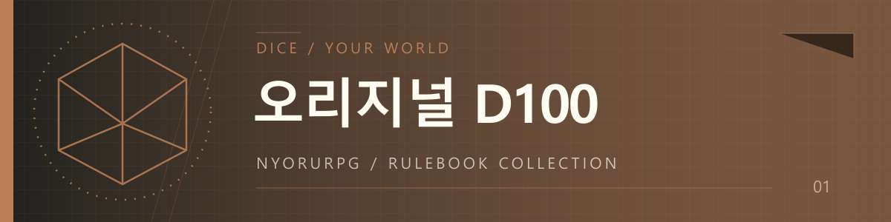
오리지널 D100
검과 마법, 동료들과 떠나는 왕도 모험.＋ 플레이 예시 · 기능 · 설정 펼치기 / 접기
검과 마법, 파티와 던전이 어울리는 기본 룰북입니다. D&D를 떠올리게 하는 왕도 판타지의 분위기로 구성할 수 있으며, 실제 계산에는 NyoruRPG의 D100 규칙을 사용합니다.
방패를 든 동료의 보호 효과, 사제가 남긴 보호막, 주문의 준비와 비용, 대상의 방어·저항이 각각 적용됩니다. 피해를 나누거나 대신 받는 효과를 쓰면 누가 얼마나 피해를 받았는지도 달라집니다. 전투가 끝나면 소모품·장비 내구도·성장·보상의 변화가 기록으로 남습니다.
구축 자료를 바탕으로 능력치와 HP·MP·SP, 인물의 기술과 장비를 준비합니다. 행동에 필요한 난이도와 보정을 적용해 d100을 굴리고 실제 변화량을 저장합니다. 결과 카드에서 적용된 성공 기준과 판정 근거를 확인할 수 있습니다.
공격·방어·회피와 다중 타격, 명중 후 연계, 자동 발동, 소환을 조합합니다. 한 기술 안에서도 적에게 피해를 주고 자신에게 보호 효과를 남기는 식으로 대상과 효과를 나눌 수 있습니다. MP·SP 비용, 사용 조건, 사용 횟수, 준비 시간과 재사용 대기를 함께 편집합니다.
출혈·독·화상·냉기 누적·동결 같은 상태, 인챈트와 속성 피해, 면역·보호막·흡혈·반사·피해 분담을 사용할 수 있습니다. 명중해야 전달되는 효과와 사용 즉시 붙는 효과를 구분하므로, 이름이 같은 공격도 구성에 따라 운용이 달라집니다.
경험치·레벨과 기술 숙련을 관리합니다. 성장에 따른 기술의 변화는 비용·위력·효과·지속 등 지원하는 항목으로 구성합니다. 무기·방어구·소모품에는 소지 효과와 착용 효과를 정하고 내구도·수리·강화를 적용합니다.
기본 전투 거리는 근접·가까움·멀리·아주 멀리 네 구간입니다. 장비와 기술의 사거리, 구간별 명중 보정, 한 행동의 이동력을 편집합니다. 탐험을 켜면 장소와 길, 조사·채집·장치·전투 구역과 남은 자원을 저장합니다.
턴테이블·행동 게이지·자유 진행, 행동·지휘관 모드, 전투가 길어·결과만, 적 체력 감소와 경험치 공유를 고를 수 있습니다.
선택 기능: 파츠, 탄약·장전, 무게, 미터 거리, 부위 조준·부상, 허기·갈증·위생·피로, 숙련 수련, 비전·연계·소환 확장, 호감도·평판·카르마, 상인·세력·재고·정기 비용, 퀘스트. 처음에는 필요한 항목만 켜고 각 장비와 인물의 세부값을 확인하세요.
이런 구성은 어때요? 방패에 동료 보호 행동을 넣고, 소환수에게 자신의 MP를 빌려주는 수호자. 스킬 제한을 켜면 방어와 공격 중 무엇을 네 칸에 남길지도 고민하게 됩니다. 성좌·스트리밍과 실험 중인 2D 지도도 선택할 수 있습니다.
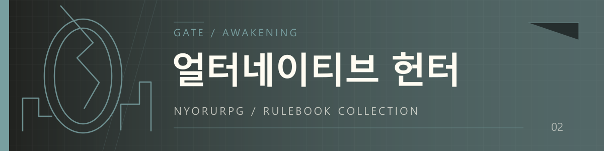
얼터네이티브 헌터
황금빛 문 너머, 동료들과 함께하는 공략.＋ 플레이 예시 · 기능 · 설정 펼치기 / 접기
발견한 장소와 적이 준비된 게이트에서 즐길 수 있는 공략 예시입니다. 숨겨진 방이나 보스의 등장 자체를 고정된 결과로 약속하는 기능은 아닙니다.
탐험의 장소와 연결, 실제 조우한 적과 파티, 기술의 조건과 연계, 구역의 해결 상태와 보상이 이어집니다. 경험치 공유를 켜면 마지막 일격을 넣은 인물 외의 전투 파티원도 선택한 방식으로 성장합니다. 저장된 장소를 다시 찾을 때에는 이전 탐험 기록을 이어 사용합니다.
근력·체력·민첩·지능·감각과 HP·MP·SP, 경험치·레벨·랭크를 관리합니다. 능력과 기술, 장비를 바탕으로 행동을 판정하고 성장과 자원 변화를 저장합니다. 기본 세계관의 준비 자료를 이용하되 사용자 설정에 맞춰 초안을 조정할 수 있습니다.
장소 이동·조사·장치·자원·조우를 기록합니다. 발견한 길과 해결한 구역, 남은 채집 자원과 보상은 서로 연결됩니다. 같은 게이트 안의 재방문은 기록을 이어 쓰고, 종료한 게이트와 새 게이트는 별도 인스턴스로 구분합니다. 보상이 있는 활동은 실제 획득 기록으로 확인합니다.
공격·방어·회피, 연속 공격과 연계, 소환과 자동 발동을 사용합니다. 기술의 위력만 아니라 비용·명중·속성·상태·시전 준비·재사용 대기를 구성합니다. 아군 강화, 표식, 방어와 후퇴처럼 서로 역할을 나누는 기술을 만들 수 있습니다.
등록한 인물 중 현재 장면에 있는 사람과 실제 전투 참가자를 따로 관리합니다. 새 NPC를 등록했다고 곧바로 파티원이 되지는 않습니다.
기본 네 구간 거리에서 활·총·근접 무기의 사거리와 거리별 불이익을 정합니다. 소지·착용 효과, 내구도·수리·강화를 사용합니다. 재료와 장비, 소모품의 획득·사용·거래도 저장합니다.
게이트 정산금과 드랍을 더 엄격하게 적용합니다. 마정석과 재료를 항상 얻는 것은 아니며, 스킬북은 희귀한 고가치 전리품으로 다룹니다. 경험치 획득 방식은 일반 진행과 같습니다.
절벽·막힌 길·장치 같은 장애물에는 상황에 맞는 보유 도구가 필요할 수 있습니다. 도구를 사용할 때에는 해당 장애물에 적합한지도 판단합니다. 도구 없이 강행하면 스탯 VS 판정을 사용하며, 해결할 수 없는 길을 임의의 우회로로 바꾸지는 않습니다. 이미 만들어진 장소를 토글 변경만으로 재생성하지 않습니다.
공통 전투 진행과 경험치 공유에 더해 파츠·장전·무게·미터 거리·부위 조준·생활 수치·숙련 수련·비전·연계·소환 확장·관계·경제·퀘스트를 선택합니다. 무기의 탄종과 장전량, 인물의 운반 한도와 이동 거리는 세부 편집에서 정합니다.
성좌가 지켜보는 게이트 공략, 시청자의 도전 목표가 붙은 공략 방송, 소환수와 마력을 공유하는 각성자도 구성할 수 있습니다. 스킬 제한을 더하면 파티원이 각자 네 칸 안에서 맡을 역할을 고르게 됩니다. 현재 상태에서는 파티 자원과 헌터의 다섯 능력치를 함께 확인합니다.
기본 세계관을 사용한다면 사용자 페르소나를 선택해 구축합니다. 바꾼 세계관이나 고유 능력이 있다면 해당 로어북과 추가 요청을 함께 넣습니다. 초안에서 성장·장비·기술을 확인하고, 플레이 설정에서 탐험·전투 방식·리얼리티 모드를 고르세요.
뉴뉴에게는 “동료의 표식을 활용하는 원거리 각성자로 만들고 싶어. 지금 기술로 어떤 연계가 가능한지 구성해 줘”처럼 요청할 수 있습니다.
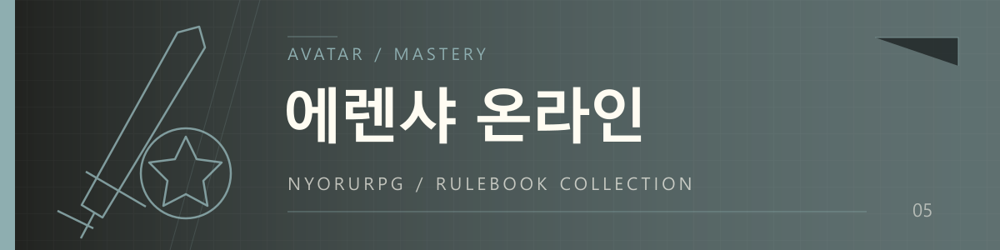
에렌샤 온라인
우당탕탕 시작해서, 성장하는 재미에 빠지다.＋ 플레이 예시 · 기능 · 설정 펼치기 / 접기
아바타의 레벨과 직업, 분야별 숙련, 기술과 장비 보정이 함께 공격·회복·활동 결과에 연결됩니다. 자주 사용하는 기술과 생활 분야가 성장하고, 퀘스트 목표와 보상, 장비 교체와 자원 소모가 기록에 남습니다.
현실의 본명과 게임 닉네임을 같은 인물에 연결합니다. 레벨·직업·경험치·HP·MP·골드, 명성과 현재 위치 등의 상태를 관리합니다. 게임 속 화폐와 현실모드의 원화는 별도입니다. 등록 인물·현재 보이는 인물·전투 참가자도 구분합니다.
검술·궁술과 제작·요리·연금·채집 등 분야별 숙련을 다룹니다. 숙련마다 Grade·레벨·경험치와 성장 조건을 편집하고 기술을 관련 숙련에 연결합니다. 인물의 레벨과 기술 분야의 숙련은 각각 확인할 수 있습니다.
숙련 목록은 넓은 창에서 두 열, 좁은 창에서 한 열로 표시합니다. 이름·등급·레벨·경험치 바를 먼저 보고 항목을 눌러 효과와 편집을 펼칩니다. 숙련 숫자가 늘어나도 모든 상세 설명을 한 번에 읽지 않아도 됩니다.
공격·회복·방어·회피·연계·활동·지속 효과를 구성합니다. 기술의 MP 비용, 재사용 대기, 횟수 제한, 준비 시간과 상태 효과를 편집합니다. 사용 횟수의 0 또는 빈칸은 제한 없음이며 MP 비용과 대기는 별도로 적용됩니다.
방어는 실제 들어오는 피해에서 막은 양과 남은 피해로 계산합니다. 예를 들어 피해 10에 방어량 10이 적용되면 해당 피해를 모두 막습니다. 장비 위력·방어와 기본 행동 설정은 구분해 다듬을 수 있습니다.
턴테이블·행동 게이지·자유 진행을 고르고, 네 구간 거리와 이동·사거리 보정을 사용합니다. 행동 게이지에서는 인물별 속도와 선택한 이동 숙련도 등을 활용합니다. 전투 종료 후 재사용 대기는 초기화하며 사용 횟수 제한은 별도 규칙을 따릅니다.
물품의 수량과 장착, 소지·착용 효과, 내구도·수리·강화를 관리합니다. 퀘스트는 목표·진행·골드·경험치·아이템 보상을 함께 저장하며, 완료하면 현재 목록에서 치우고 완료 기록으로 확인합니다. 미니 상태창에서도 장비·퀘스트·남은 기술 대기와 활성 효과를 확인합니다.
이야기 속 현실의 생활 시간·원화·허기·갈증·피로·생리 부담·건강을 관리합니다. 부족한 생활 상태는 경고로 드러나며, 계속 방치하면 약해지거나 현실 인물이 사망할 수 있습니다. 현실 사망이나 자리 비움은 아바타의 행동 가능 여부에도 연결됩니다.
이야기에서 지난 15분은 생활 기록에서도 15분입니다. 시간 자체를 숨은 5배로 늘리지 않습니다. 욕구 0에서 기본 알림에 이르는 기준은 허기 약 4시간·갈증 약 3시간·피로 약 16시간·화장실 약 4시간이며 편집할 수 있습니다. 실제 PC 사용 시간이나 API를 기다린 시간을 세지는 않습니다.
현재 장면의 다른 온라인 플레이어도 각자 욕구와 자리 비움·복귀를 기록합니다. 동료가 밥을 먹어도 사용자의 식자재와 허기가 바뀌지 않습니다. 게임 NPC·몬스터는 대상에서 제외합니다. 경고를 받은 메인 AI가 “밥 좀 먹고 올게” 같은 상황을 표현할 수 있으며 특정 대사를 강제하지는 않습니다.
게임 이용료·전기·수도는 경과 일수로 정산해 하루를 천천히 즐기는 플레이와 긴 시간 스킵을 함께 다룹니다. 이용료 미납 7일은 접속 제한, 전기·수도는 정한 유예 뒤 서비스 중단으로 연결합니다. 납부하면 즉시 제한을 다시 계산합니다. 각 요금·유예·환전 값은 게임 설정에 맞게 편집합니다.
현재 상태에서 현실 생활 수치를 확인하고 편집하며, 원화 입출금 내역으로 지출을 추적할 수 있습니다. 유료 식사와 식수는 회복·비용을 함께 처리합니다. 게임 골드, 원화, 방송 후원 잔액은 서로 다른 기록입니다.
하드모드는 숙련 상승에 필요한 경험치를 일반 진행의 3배로 두고, 새 탐험 자료에 PK와 초보자를 노리는 적대 이용자의 위험을 반영할 수 있게 합니다. 현실모드와 하드모드는 각각 선택하며 기본 OFF입니다.
경험치 공유를 켜면 처치 경험치를 전투 파티원 수로 나누거나 각자 기본값을 받습니다. 파츠·장전·무게·미터 거리·부위 조준·관계·경제도 추가할 수 있습니다. 생활 부담은 에렌샤 전용 현실모드에서 관리합니다.
소환수를 독립 성장시키거나 주인과 자원을 연결하고, 스킬 제한으로 전투 구성을 고를 수도 있습니다. 성좌·스트리밍과 실험 중인 2D 지도도 선택 가능합니다. 현실 장면에서는 성좌의 등장·반응·개입을 멈추고, 게임 복귀 후 저장한 관계와 신앙을 이어 사용합니다.
사용자 페르소나를 고르고 본명과 게임 닉네임을 각각 입력합니다. 변경한 세계관이 있다면 관련 자료도 선택합니다. 초안의 레벨·직업·숙련·기술·장비를 살펴보고 원하는 토글을 켭니다. “빠른 연격으로 숙련을 쌓는 검객”, “전투와 연금술을 함께 키우는 유저”처럼 추가 요청을 적어 보세요.
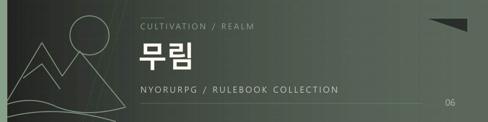
무림
스승의 한마디를, 몸으로 이해하는 순간.＋ 플레이 예시 · 기능 · 설정 펼치기 / 접기
스승과 제자의 경지 차이, 제자의 관련 능력과 재능, 가르침의 이해 여부가 판정에 연결됩니다. 수련은 시간·자원을 쓰며 외공·내공·기술 숙련과 깨달음에 영향을 줍니다. 쌓은 이해도와 돌파에 필요한 기초 능력을 함께 확인해 다음 경지에 도전합니다.
생명력과 기력, 외공·내공·화술·위압·은밀·통찰·감각·지식을 사용합니다. 기술·효과·장비·조건의 계산도 무림의 능력치 체계를 따릅니다. 외공 중심·내공 중심·균형형 등 수련 방향을 구성합니다.
화술뿐 아니라 상대의 속내를 읽는 통찰, 기척을 찾는 감각, 숨어 움직이는 은밀 등 상황에 맞는 비전투 능력을 판정에 사용할 수 있습니다. 실제 비전투 능력치 판정은 성공·실패 모두 기본 깨달음 0.1을 주되 경지 배율·감쇠·상한을 따릅니다. 판정 없는 일상 대화나 꽃을 본 것만으로 계속 성장하지는 않습니다.
실전·수련·문답·스승의 가르침에서 성장합니다. 가르침은 배우는 인물과 내용, 관련 능력·방향을 기록하고 실제 이해를 시도합니다. 경지 차이가 큰 가르침은 이해가 어려울 수 있습니다. 사흘간 폐관처럼 긴 수련도 시간·소모·성과를 한 요청으로 처리할 수 있습니다.
깨달음 이해도는 최대 200%입니다. 100%까지는 돌파 성공 확률에 연결되고 초과분은 추가 득도 가능성에 연결됩니다. 높은 구간에서는 더 천천히 쌓입니다. 이해도가 있어도 필요한 외공·내공을 갖추어야 실제 돌파를 시도합니다.
현재 경지의 요구 능력과 이해도로 돌파를 판정합니다. 기본 규칙에서는 실패 시 주화입마로 외공·내공을 잃고 이해도가 초기화됩니다. 이미 초절정인 인물이 다음 단계에 도전하다 실패할 때부터 사망 규칙을 적용합니다. 커스텀 경지는 초안에서 문턱과 실패 규칙을 함께 확인합니다.
기술 등급은 입문·비급·절기·신공, 숙련은 1성부터 5성까지 다룹니다. 비전은 장을 익혀 기술을 열고, 열린 초식을 연결해 사용합니다. 기본 비전 연계는 첫 초식을 포함해 입문 3회·비급 4회·절기 6회·신공 10회입니다. 기력과 사용 조건, 재사용 대기와 효과를 함께 편집합니다.
장비의 소지·착용 효과, 내구도·수리·강화와 거리·이동을 사용합니다. 평판과 카르마는 실제 사건을 바탕으로 기록하며 새로운 갈등이나 이야기의 결말을 자동으로 정하지 않습니다.
룰북 기본은 범인에서 우화등선까지 23단계입니다. 커스텀 · 로어북 자동 구축은 선택한 자료에서 경지 이름·순서·개수를 가져옵니다. 10단계나 40단계인 봇도 그 체계에 맞춰 준비하고, 외공·내공 문턱은 정수로 확인합니다. 직접 표를 편집할 수도 있습니다.
진행 중에는 플레이 설정 → 무림 경지에서 이전 경지와 새 경지의 연결을 확인해 변경합니다. 경지표를 바꾸었다고 현재 외공·내공과 직접 편집한 자료를 초기화하지 않습니다.
공통 전투 설정에 파츠·장전·무게·미터 거리·부위 조준·생활 수치·비전·연계·소환 확장·경제·퀘스트를 추가합니다. 기존 무림의 비전·수련·평판·카르마는 원래 규칙을 유지합니다.
성좌를 켜고 수련을 지켜보는 초월자의 시선으로 해석하거나, 사역하는 영물과 기력을 연결할 수도 있습니다. 스킬 제한을 사용하면 배운 모든 무공 중 이번에 쓸 초식을 편성합니다. 2D 지도는 실험 기능으로 선택합니다.
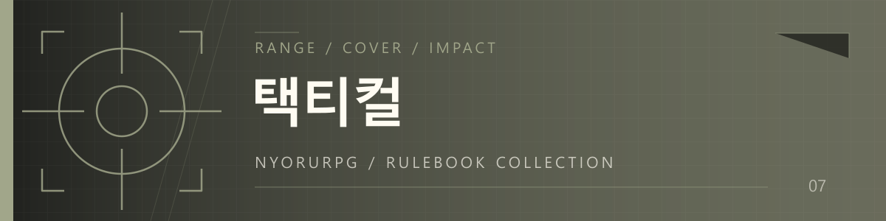
택티컬
엄폐 뒤의 재장전, 방패 너머의 진입.＋ 플레이 예시 · 기능 · 설정 펼치기 / 접기
마지막 폭발은 장면 연출 예시입니다. 아래에는 현재 도구로 다루는 무기·장전·거리·엄폐·부상 규칙을 소개합니다.
무기와 파츠, 거리별 명중 보정, 엄폐, 조준 부위, 팔의 부상과 정신적 압박, 숙련과 조준 준비가 공격에 영향을 줍니다. 방패는 보호하는 부위와 방향을 확인합니다. 탄약을 쓴 뒤에는 장전과 준비 행동이 다음 공격까지의 시간을 바꿉니다.
권총·리볼버·기관단총·소총·볼트액션·샷건·대구경 정밀소총 등 세분화된 계열을 사용합니다. 활·석궁·칼·방패도 다루므로 현대 화기 세계관 안에서 근접 전투 콘셉트를 구성할 수 있습니다.
탄종·장전량·남은 탄약을 기록하고 재장전을 행동으로 처리합니다. 볼트 준비와 대구경 정밀소총의 단계별 준비도 저장합니다. 샷건은 한 발의 발사와 산탄의 집탄·제압을 구분합니다. 무기별 값은 장비 편집에서 확인합니다.
조준경·총구·손잡이·개머리판·탄창·양각대 등을 호환되는 슬롯과 계열에 부착하고 분리합니다. 명중·반동·사거리·제압·소음·행동 시간 보정을 사용합니다. 보급·개선·정예·특수·실험 등급과 물품 무게를 관리합니다.
주무기와 스위칭 칸을 함께 장비하고 행동마다 사용할 무기를 고릅니다. 두 칸의 무기가 자동으로 동시에 발사되는 설정은 아닙니다. 방패와 무기를 함께 쓸 때에는 손의 사용 가능 상태와 방패 점유도 확인합니다.
미터 거리와 좌표로 이동·사거리·사선을 다룹니다. 가까운 거리에서 불리한 무기, 거리가 벌어지면 떨어지는 명중, 조준하기 어려운 머리나 손 등을 구분합니다. 엄폐는 2차원 사선 기준으로 적용하며 벽 관통·고도·실제 탄도를 모두 재현하는 시뮬레이터는 아닙니다.
일반 택티컬은 단일 HP나 부위 HP 대신 부상 단계·출혈·치료·영구 손실을 사용합니다. 명중 부위와 방호·관통·피해 강도에 따라 결과가 달라집니다. 팔의 부상은 사격과 장비 사용에 영향을 주며, 지혈·안정화·회복은 상황에 맞는 의료 물품으로 처리합니다. 보통의 치료로 잃은 사지가 재생되지는 않습니다.
무기 계열의 숙련과 개별 무기에 대한 익숙함을 따로 관리합니다. 무게와 이동·행동 시간, 정신적 압박·사기·지휘가 전투에 연결됩니다. 카르마와 실제 사건을 목격한 동료의 반응을 기록하되, 그 기록 자체로 서사의 전개를 대신 결정하지 않습니다.
전투 진행 방식, 행동·지휘관 모드, 전투가 길어·결과만을 고릅니다. 비전·연계·소환 확장으로 콘셉트 기술을 구성하거나 장비 개량으로 무기 조정·방호 보강을 할 수 있습니다. 파츠·장전·무게·미터 거리·신체는 이미 택티컬의 기본 규칙입니다.
등록한 지원 개체의 유지·성장을 관리하고, 다른 인물의 능력을 무기 위력·명중·행동 속도 보정에 연결할 수 있습니다. 부상 체계는 그대로 유지합니다. 성좌·스트리밍도 선택할 수 있지만 별도의 2D 지도 실험은 이 룰북에 적용하지 않습니다.
사용자 페르소나와 무기·탄약·조직·세계관 자료를 선택합니다. “방패와 권총을 쓰는 진입 요원. 근접 무기도 휴대”처럼 역할을 적고, 초안의 무기·탄종 호환과 장전 상태, 파츠와 방호 장비를 확인합니다. 전투에서는 “엄폐 뒤에서 재장전”, “오른팔 조준”, “5m 접근 후 검으로 공격”처럼 의도를 말하세요.
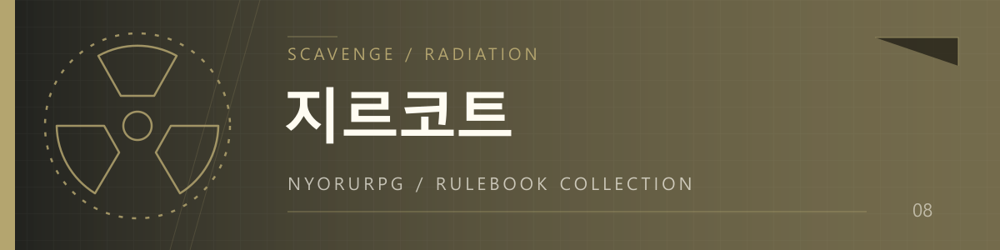
지르코트
다 챙겼는데, 이제 무엇을 버려야 할까.＋ 플레이 예시 · 기능 · 설정 펼치기 / 접기
프로젝트:지르코트의 지역과 자료를 바탕으로 생존 파밍을 즐기는 전용 룰북입니다. 어디로 가고 언제 돌아올지는 플레이하면서 정합니다.
탄약이 담긴 탄창, 가방 안의 물품, 장착과 소유, 수납과 무게가 함께 기록됩니다. 필요한 보급품을 챙기면 짐이 늘고, 덜 챙기면 다음 교전이나 환경에 대응하기 어려워질 수 있습니다. 수색한 자원은 남은 양을 유지하고, 회수한 전리품은 실제 소지품에 연결됩니다.
초기 구축에서 원본 21개 지역 중 시작 지역과 권장 준비물을 확인합니다. 수색한 장소와 남은 물품, 시신과 전리품의 회수를 기록합니다. 같은 장소를 다시 찾아도 남은 자원을 이어 사용합니다. 지역별 준비를 참고하되 원본 봇의 모든 보스 스크립트를 그대로 실행하는 기능은 아닙니다.
택티컬의 무기 계열·파츠·미터 전투를 바탕으로 실물 탄창과 탄창 안의 탄약을 관리합니다. 장착된 탄창과 여분 탄창, 탄약 물품을 구분하고 실제 보유 자료로 장전합니다. 파츠와 방호 장비, 내구도와 수리도 사용합니다.
물품의 소유·장착 관계, 가방의 수납과 무게, 운반 부담을 관리합니다. 창고는 장비·소지품 → 소지품 목록 아래에서 넣기·꺼내기로 사용합니다. 창고를 이용한다는 이유만으로 이야기에 필수 귀환 절차를 추가하지 않습니다.
머리·몸통·복부·양팔·양다리의 7부위 HP를 사용합니다. 택티컬의 부상 단계 중심 규칙과 구분되는 지르코트의 신체 체계입니다. 부위 조준·방호·부상·출혈과 치료를 함께 확인하며, 장비와 보유 의료 물품을 관리합니다.
누적 피폭과 표면 오염, 차폐 장비의 역할을 구분합니다. 오염을 씻어내는 것과 이미 누적된 피폭을 치료하는 것은 다른 처리입니다. 지역과 보유 장비, 필요한 치료 물품을 확인해 준비합니다.
생존 모드는 허기·갈증·위생·피로와 식사·식수·휴식·씻기를 기록하며 새 게임에서는 기본 OFF입니다. 이야기 속에서 실제로 지난 시간을 사용합니다. API를 기다리거나 창을 열어둔 시간은 생활 시간으로 세지 않습니다. 생존을 꺼도 피폭·오염·출혈은 별도 규칙으로 남습니다.
카르마와 상인·세력·재고는 각각 켜고 끕니다. 실제 요청한 관계 사건과 거래를 기록하며 일반 구매·판매는 해당 관리 토글을 꺼도 사용할 수 있습니다. 비전·연계·소환 확장과 장비 개량도 선택할 수 있습니다.
생존 방송을 켜면 시청자가 좋아하는 파밍 방식과 도전 부탁을 더할 수 있습니다. 후원 물품도 예산 안에서 다루므로, 필요한 물자를 어떻게 챙길지 고민하는 흐름을 유지할 수 있습니다. 창고와 소지품은 검색하고 페이지로 나누어 확인합니다. 별도의 2D 지도 실험은 이 룰북에 적용하지 않습니다.
지르코트를 고른 뒤 사용자 자료와 필요한 로어북, 시작 지역을 선택합니다. 장비·탄창·탄약·수납·무게를 초안에서 확인합니다. “치료 물품과 식수를 우선하고 가볍게 이동하는 정찰 생존자”처럼 요청하고, 실제 플레이에서 필요에 따라 생존과 상인 관리 기능을 켜 보세요.
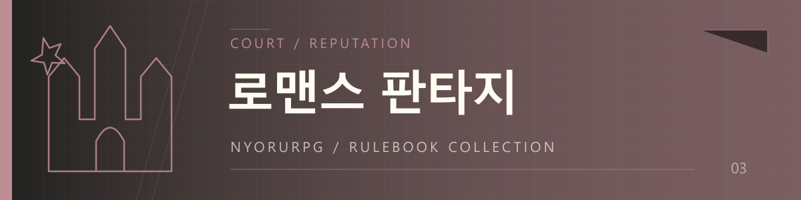
로맨스 판타지
교섭에는 이겼다. 그 사람의 신뢰도 얻었을까.＋ 플레이 예시 · 기능 · 설정 펼치기 / 접기
인물의 능력과 실제 이해관계를 바탕으로 판정하고, 확보한 정보·물품·인맥을 준비로 활용합니다. 교섭의 승패와 상대의 감정 변화는 각각 기록됩니다. 거래에서 이겨도 신뢰가 줄 수 있고, 제안에 실패했어도 정직한 태도는 관계에 다른 의미를 남길 수 있습니다.
실제로 의사가 충돌하는 장면에서는 스탯을 비교하고, 불확실한 작업에는 판정을 사용합니다. 단순한 식사나 저항 없는 도움까지 전부 승패로 나누지 않습니다. 결과의 의미는 사건의 맥락과 봇 설정에 맞춰 이어갑니다.
인물별 관계와 신뢰를 관리합니다. 내가 상대를 대하는 마음과 상대가 나를 대하는 마음을 구분해 확인할 수 있습니다. 호감과 신뢰는 판정에 이겼다는 이유만으로 동일하게 올라가지 않으며 실제 사건의 의미에 따라 기록합니다.
설계로 목표·난이도·성공 내용·실패 대가·라이프를 제안받고 수락하거나 거절합니다. 수락하기 전에 무엇을 얻고 무엇을 감수하는지 확인하세요. 초대장·정보·인맥처럼 실제 확보한 준비를 저장해 관련 판정에 활용할 수 있습니다.
목표를 수락한 뒤 어떻게 접근할지와 다음 선택은 플레이하면서 정합니다. 플러그인이 이야기의 경로와 결말을 미리 고정하지 않습니다.
사건에서 얻은 배움을 성장으로 남기고, 인물별 소지품과 소지금을 관리합니다. 선물을 제안하는 장면과 실제로 전달하는 사건을 구분합니다. 획득·사용·전달한 물품이 저장 자료에 남습니다.
장소는 알려진 저택·상점·도시와 연결, 세계관 정보를 기억합니다. 일반 탐험처럼 전투·수색·보상을 자동 생성하는 기능은 아닙니다.
상인·세력·재고·정기 비용으로 실제 거래의 재고·가격과 정기 지출을 관리합니다. 장소와 경제를 함께 켜면 방문한 상점과 거래를 이어서 다루기 편합니다.
성좌로 사교계의 선택을 지켜보는 초월자를 더하거나 스트리밍으로 공개된 무대의 반응을 구성할 수도 있습니다. 사회 룰북에서는 도움도 해당 능력·판정에 맞게 구성합니다. 전투 룰북의 피해량을 그대로 가져오지는 않습니다.
사용자 페르소나와 신분·능력·세계관·주요 관계의 로어북을 선택합니다. “궁정 외교 중심”, “사업과 사교를 함께”, “무력보다 정보와 설득이 중요한 인물”처럼 요청합니다. 초안의 관계 방향과 능력, 소지금을 확인하고 설계가 제안되면 목표와 실패 대가부터 살펴보세요.
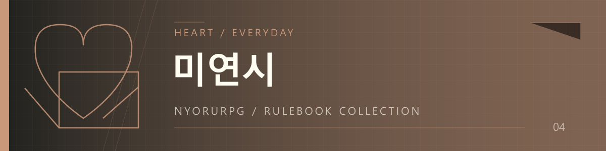
미연시
같은 말도, 함께 보낸 시간이 다르니까.＋ 플레이 예시 · 기능 · 설정 펼치기 / 접기
인물의 능력과 현재 관계를 바탕으로 제안의 난도를 정합니다. 같은 제안을 거듭했는지, 실제 어떤 사건이 있었는지, 그날의 활동에 체력과 시간이 얼마나 들었는지 기록합니다. 판정과 감정 변화, 하루의 활동은 각각 이어지면서 다음 선택의 맥락이 됩니다.
상대에게 제안할 때 사용자 측 d100을 굴리고 상대 난이도를 초과하면 성공합니다. 현재 관계와 능력을 기준으로 판정하며, 평범한 대화 전체를 반복 제안으로 세지는 않습니다. 같은 제안을 거듭하면 경계가 올라갈 수 있습니다.
하나의 호감도 외에 신뢰와 경계를 함께 다룹니다. 실제 사건을 바탕으로 방향이 있는 관계를 기록하고, 누구에게 어떤 감정을 갖는지 확인합니다. 좋아할 만한 행동을 했다는 것과 실제로 상대가 좋아했다는 것은 구분합니다.
체력과 하루의 시간 흐름을 관리합니다. 훈련에는 체력과 시간이 들고 같은 날 같은 능력치를 반복해서 훈련하면 더 어려워집니다. 의미 있는 활동에서 얻은 배움과 성장, 관계 변화를 기록합니다.
물건과 돈을 얻거나 전달한 결과를 저장합니다. 선물을 주겠다는 제안과 실제 전달을 구분하고, 소지 수량과 잔액을 확인합니다. 대화가 이어져도 이전 활동과 물품 변화가 게임 기록으로 남습니다.
장소로 학교·동아리방·카페와 연결된 세계관 정보를 저장합니다. 상인·세력·재고·정기 비용으로 실제 구매·판매와 반복 지출을 관리할 수 있습니다. 해당 기능을 켜도 정해진 사건이나 새로운 갈등을 강제로 만들지 않습니다.
방송 활동이 있는 캐릭터라면 스트리밍으로 시청자의 취향·충성심·후원을 기록할 수 있습니다. 판타지 요소가 있는 이야기라면 성좌도 선택할 수 있습니다. 평범한 일상을 원한다면 추가하지 않고 관계와 활동 기록만 사용해도 됩니다.
사용자 페르소나와 등장인물·주요 관계·학교나 생활 배경의 로어북을 선택합니다. 초안에서 시작 관계와 능력치, 체력과 소지금을 확인합니다. 뉴뉴에게는 “이미 친한 친구와 이제 막 만난 인물의 시작 관계를 구분해 줘”처럼 구체적으로 요청해 보세요.
04 / NYORU RPG
여러분에게는 한 번의 멋진 공격입니다. 플러그인은 지금 쓸 수 있는 기술인지, 닿는 거리인지, 얼마를 소모하고 실제로 무엇이 달라졌는지를 이어서 처리합니다.
판정과 변화 · 설명용 표시 예시
당신의 마지막 일격
HP 피해 42 · MP 소모 8
명중 → 냉기 누적 → 동결 조건 확인
행동 준비
현재 차례, 행동 불가 상태, 편성한 기술, 장착한 무기, 사용 조건·시전·재사용 대기.
거리와 대상
현재 거리, 장비·기술의 사거리, 이동, 명중 보정. 지원 룰북의 엄폐·부위 조준도 연결됩니다.
공격과 방어
위력과 능력치, 숙련·장비·파츠 보정, 상대 방어·저항·면역과 실제 방어량.
실제 피해
보호막, 피해 분담·대신 받기, 자원 공유, HP 감소와 흡혈·반사.
명중 뒤 효과
표식과 인챈트, 상태 누적·임계치, 연속 타격·후속 기술, 조건부 자동 발동.
남는 기록
자원·탄약·내구도 소모, 효과 지속, 경험치·숙련, 처치와 전리품, 퀘스트 진행.
적용되는 규칙은 룰북과 설정에 따라 달라집니다. 결과 카드의 상세에서 주사위와 실제 변화량을 확인할 수 있습니다. 모든 기능을 켜야 이 계산이 작동하는 것은 아닙니다.
냉기가 35씩 쌓이고 100에서 동결되는 설정이라면 세 번 적용해야 얼어붙습니다. 여기에 냉기 누적량 1.5배 효과를 더하면 한 번에 52.5씩, 두 번으로 문턱을 넘습니다. 상대에게 냉기 면역이 있다면 그 조건도 함께 확인합니다.
한 번에 세 번 때리는 기술과 같은 기술을 세 번 연계하는 구성도 다릅니다. 다중 타격은 한 기술의 비용, 후속 기술은 각 기술의 비용과 사용 조건을 따릅니다. 빠르게 얼리되 마력을 많이 쓰는 검객으로 만들지, 한 타격씩 아껴 쓰는 검객으로 만들지 정해 보세요.
위 수치는 구성 예시입니다. 냉기 피해와 누적량, 지속 시간과 비용을 각각 편집할 수 있습니다.
이미지 03 · 이야기와 결과 카드
한 공격의 판정·피해·상태 누적·자원 변화가 함께 보이는 실제 플레이 화면.
05 / NYORU RPG
효과 편집기를 처음부터 공부할 필요는 없습니다. Nyang-010, 뉴뉴에게 현재 캐릭터로 하고 싶은 플레이를 이야기해 보세요. 저장 자료와 관련 로어북을 참고해 수정 제안을 만듭니다.
질문 → 제안 카드 → 값과 조건 확인 → 저장. 제안에 들어 있는 비용·대상·수치까지 직접 고칠 수 있습니다. 설명만 바뀌는 데서 끝나지 않도록 실제 저장할 항목을 확인하세요. 새로운 인물 등록과 경지·드랍표·관계·성좌·방송 설정도 지원 범위에서 제안받을 수 있습니다.
놓치지마 검사는 다음 사용자 입력 때 이전 AI 답변과 저장 상태를 비교합니다. 물건을 팔았는데 골드만 빠졌는지, 재료는 썼지만 완성품이 없는지, 파츠를 받았어도 무기에 연결하지 않았는지처럼 거래의 각 결과를 나누어 확인합니다. 봇이 따로 출력하는 상태창도 비교 대상입니다.
확실한 사건은 허용된 범위에서 보완하고, 애매하거나 확인이 필요한 항목은 남겨 둡니다. 상태창 글자가 틀린 것과 실제 게임 사건이 빠진 것도 구분합니다. 누락을 모두 잡아내는 기능은 아니며, 검사를 켜면 보조 AI 사용량과 대기 시간이 발생합니다.
저장된 상태를 다음 답변 전에 알려주는 기능도 있습니다. 생활 부담·무게·소환 유지 상태나 켜 놓은 기능의 반응이 빠진 경우 등을 메인 AI에게 전달합니다. 이 알림 자체는 추가 AI를 호출하지 않습니다. 대사를 만들고 다음 행동을 정하는 역할은 계속 메인 AI에게 있습니다.
이미지 04 · 뉴뉴와 놓치지마 검사
콘셉트 요청과 제안 카드, 거래 누락의 반영·미해결 항목이 보이는 실제 화면.
06 / NYORU RPG
채팅 상단에 패널과 이어진 작은 돌출부가 남습니다. 누르면 아래로 펼쳐지며 채팅 공간을 확보합니다. 상태·능력과 기술·장비·소지품·탐험·전투·퀘스트로 나누어 필요한 항목을 볼 수 있고, 지도 실험을 켰다면 탐험 탭에서 지도도 확인합니다.
전체 창에서는 파티의 자원과 현재 효과, 장비의 위력·방어·수량을 확인합니다. 긴 물품 목록은 검색하고 12개씩 넘겨 보며, 선택한 물품의 강화·파츠·기본 행동 설정을 펼칩니다. 에렌샤의 숙련, 무림의 경지, 지르코트의 수납·피폭처럼 룰북 고유 정보도 함께 남습니다.
이미지 05 · 미니 UI와 파티
상단 미니 패널의 접힌 모습·펼친 모습, 전체 창의 파티와 검색 가능한 장비 목록.
“앞으로 나아가 주변을 살핀다.” 평소처럼 행동을 말하면 메인 AI가 이동·둘러보기·수색을 구분해 도구로 처리합니다. 단순한 대화나 지도 조회만으로 움직이거나 시간이 흐르지는 않습니다.
프로그램이 만든 지형에 현재 위치와 발견한 요소를 표시하고, 한 번 만든 지도는 저장해 다시 사용합니다. 알려지지 않은 공간과 숨은 장치는 발견 전에는 지도에 드러내지 않습니다. 지도가 연결된 전투에서는 좌표와 벽을 거리·시야·이동에 활용합니다.
지도는 채팅에서 일어난 행동을 보는 화면입니다. 도구에 실제 이동이 기록되어야 위치가 바뀝니다. AI가 모든 문장을 읽고 언제나 자동으로 지도를 갱신한다고 보장하는 기능은 아닙니다.
지원: D100·얼터네이티브 헌터·에렌샤·무림. 플레이 설정에서 선택하며 아직 실험 중입니다.
이미지 06 · 저장되는 2D 지도
실제 발견 전·후 또는 서로 다른 장소의 지도. 같은 화면을 전후 비교로 사용하지 마세요.
같은 판정을 여섯 가지 테마로 비교해 보세요. 룰북과 카드 테마는 별도로 고를 수 있습니다.
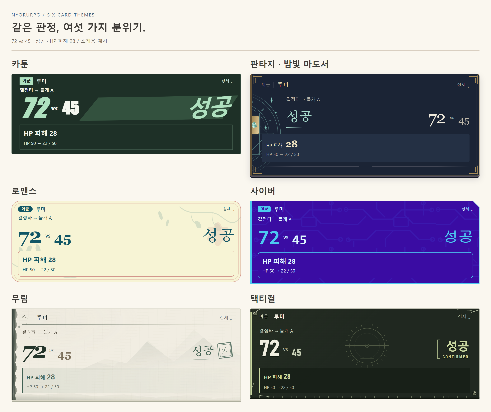
기존 소개글의 카드 예시 이미지를 함께 실었습니다. 실제 사용자 채팅 캡처는 아닙니다. 아래 테마를 펼치면 판정·행동 게이지·턴테이블·성장 카드를 크게 볼 수 있습니다.
큰 숫자와 전위적인 도형으로 판정 결과를 시원하게 보여 줍니다.
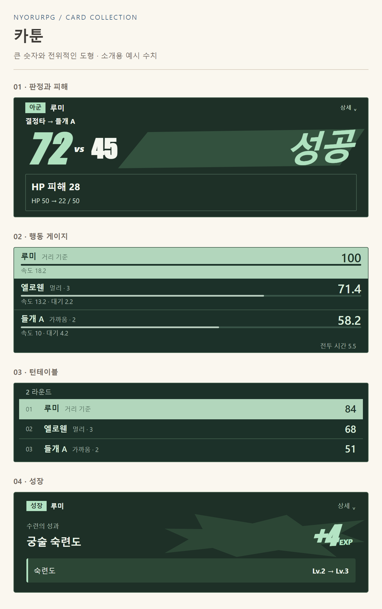
남색 마도서 위에 룬과 별빛이 새겨집니다.
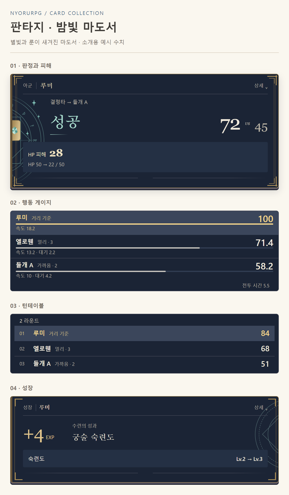
꽃과 편지의 부드러운 분위기를 담았습니다.
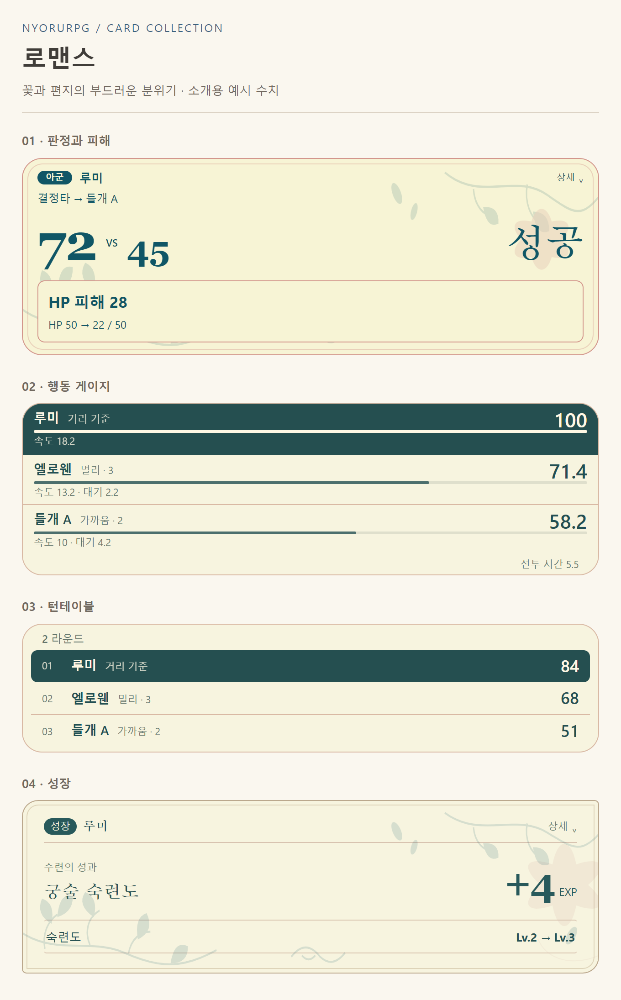
전자회로 문양과 보색의 글자로 결과를 강조합니다.
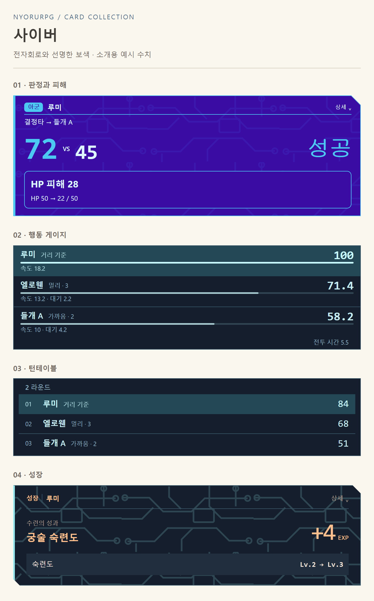
먹물 번짐, 낙관과 산수의 여백을 담은 서첩입니다.
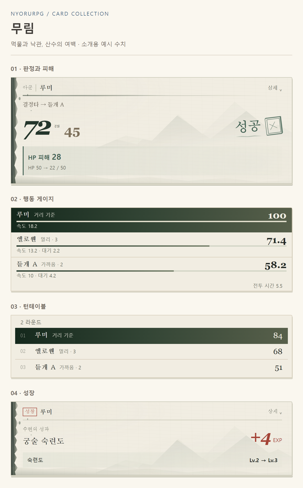
모서리의 사용감과 전술 표식이 남은 야전 단말기입니다.
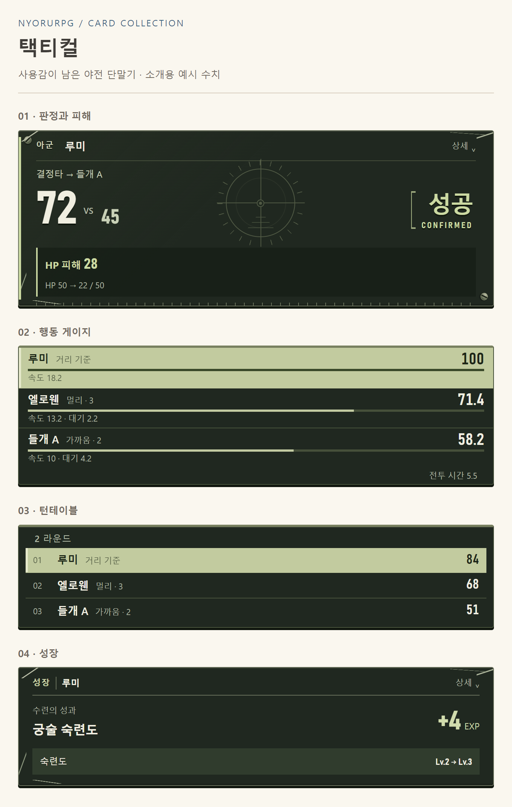
룰북과 카드 테마는 따로 고를 수 있습니다. 간결한 정보를 켜거나 글자 크기·여백을 조절해 읽기 편하게 바꾸세요. 주사위와 저장 결과는 그대로입니다. 다른 표시 모듈과 충돌한다면 카드 호환 표시를 확인할 수 있습니다.
07 / NYORU RPG
연결은 두 가지 중 하나를 선택합니다. Yumi Provider Manager의 Toolbox를 쓰거나, 별도 개인 중계기를 실행해 HTTP MCP로 연결합니다. 같은 RPG 도구를 두 경로로 동시에 켜지 마세요.
중계기 방식은 프로바이더 파일을 직접 고치지 않아도 되는 경로로 추천합니다. 별도 실행 프로그램이 필요하며, 아래 안내는 Risu와 중계기를 같은 PC에서 쓰는 경우를 기준으로 합니다.
이미 Yumi Provider Manager와 Toolbox를 사용하는 분을 위한 방법입니다.
도구 등록 자체가 실패하는 개조 호스트에서는 아래 개인 중계기 방식을 사용해 보세요. 이 안내를 따라 프로바이더 파일이나 allowed-ipc 줄을 직접 수정할 필요는 없습니다. Toolbox·개인 중계기로 같은 RPG 도구를 동시에 선택하지 않습니다.
내 PC에서 중계기를 켜 두고, 플러그인이 등록한 도구를 프로바이더에 HTTP 주소로 연결합니다. 공용 서버를 운영할 필요는 없습니다. 중계기는 RPG와 별도 배포하는 실험판이며 다른 도구도 같은 연결 규격을 적용하면 함께 쓸 수 있습니다.
실행창을 최소화하면 계속 작동합니다. 실행창의 X 또는 Ctrl+C는 중계기 종료, 브라우저의 안내 페이지만 닫는 것은 서버 종료가 아닙니다.
NyoruRPG의 AI 연결 → 개인 HTTP 중계기에서 개인 중계기 사용을 켜고 아래 값을 넣은 뒤 저장하고 연결을 누릅니다.
중계기 기본 주소
http://127.0.0.1:18765 · 여기에 /mcp를 붙이지 않습니다.
도구 그룹 이름
기본 nyoruRPG를 사용합니다.
등록용 키 · Publisher key
중계기 실행창의 Publisher key 값.
저장 버튼 바로 밑에 ‘도구 등록 완료’가 표시되는지 확인합니다. ‘등록 대기’라면 표시된 이유를 보고 사용할 채팅의 RPG 상태부터 확인하세요. 설정이 저장된 것과 도구 등록이 끝난 것은 별개입니다.
브라우저로 연 중계기 첫 화면에 실행창의 Consumer key를 넣고 도구·주소 확인을 누릅니다. 연결된 도구에서 nyoruRPG를 선택하고 표시된 URL을 복사합니다.
기본 설정의 RPG 전용 주소는 http://127.0.0.1:18765/mcp/nyoruRPG입니다. 직접 외워 넣기보다 실제로 등록된 도구의 주소를 복사하세요. 여러 도구를 한 번에 쓰려면 같은 화면의 전체 도구 주소를 선택할 수도 있습니다.
Provider Manager의 MCP 서버 추가에 아래 값을 넣습니다. 다른 프로바이더도 HTTP MCP를 지원한다면 해당 서버 등록 화면을 사용합니다.
이름
NyoruRPG처럼 알아보기 쉬운 이름.
URL
앞 단계에서 복사한 RPG 도구 그룹 주소.
Transport
streamable-http
Auth
Bearer
인증값
실행창의 Consumer key 값만 입력.
Timeout ms
600000 · 긴 자료 생성 결과를 기다리는 기본값.
서버를 저장하고 도구 목록을 불러온 뒤, 실제 사용할 모델의 도구 설정에서도 NyoruRPG를 선택합니다. 서버 등록만 하고 모델의 도구 선택을 빼먹으면 AI가 사용하지 못합니다.
Publisher key는 RPG에, Consumer key는 프로바이더에. 두 키는 역할이 다릅니다. /mcp 주소만 넣는다고 설치된 모든 플러그인이 자동으로 발견되는 것은 아닙니다. 앞서 중계기에 등록한 도구만 나옵니다.
NyoruRPG의 AI 연결에서 보조 API를 설정하고, 원하는 채팅에서 구축을 진행합니다. 도구 연결은 메인 AI가 RPG를 부르는 통로, 보조 API는 RPG가 새 자료를 준비하고 뉴뉴·검사를 실행하는 연결입니다. 중계기를 연결했다고 보조 API까지 설정되는 것은 아닙니다.
채팅·룰북을 바꾸어 도구 구성이 달라졌다면 프로바이더의 도구 목록을 다시 불러오세요. 연결 성공 표시만으로 실제 모델 호출까지 확인된 것은 아닙니다.
위 127.0.0.1 주소는 프로그램이 요청을 보내는 자기 기기입니다. 휴대폰의 127.0.0.1은 PC가 아닙니다. PC 중계기를 휴대폰에서 쓰려면 PC 주소·허용 출처 등 별도 설정이 필요하며, HTTPS 웹 Risu에서는 브라우저 정책에도 영향을 받습니다. 이 경우 중계기의 다른 기기 연결 안내를 따라 주세요.
기존 NodeRisu·해적리스·포켓리스 서버와는 폴더·프로세스·기본 포트가 별개입니다. 중계기를 종료해도 원래 Risu 서버를 종료하지 않습니다. 모든 개조판·모바일 환경의 호환성을 보장하는 경로는 아닙니다.
이미지 07 · 중계기 연결 순서
실행창의 키는 가립니다. RPG의 도구 등록 완료 → 중계기 도구 목록·URL → 프로바이더 서버 설정과 모델별 도구 선택을 보여 주세요.
새 채팅은 기본 OFF입니다. 원하는 채팅에서 시작 안내를 열고, 기존 RPG 백업을 가져오거나 새 게임을 선택합니다. 전원을 꺼도 저장된 게임을 삭제하지는 않습니다.
룰북 → 추가 요청·테마·시작 옵션 → 자료·시작 인물 → 구축 → 초안 확인 → 적용 순서입니다.
초기 구축에서 고르는 자료는 RPG의 참고 범위입니다. 봇 로어북의 원래 활성화 설정까지 바꾸지는 않습니다. 처음에는 주인공과 함께 출발하는 동료 정도면 충분하며, 나중에 실제로 등장한 인물도 등록할 수 있습니다.
초안에서 대상·비용·조건·위력·효과를 확인하고 적용합니다. 원하는 설정이 설명에만 적혀 있다면 뉴뉴에게 실제 효과로 제안해 달라고 하거나 직접 편집할 수 있습니다. 요청만으로 플러그인에 없는 계산 기능을 새로 추가하지는 않습니다.
에렌샤는 본명과 게임 닉네임을 함께 입력합니다. 시작 인물에 ID를 요구한다면 같은 인물을 찾기 위한 이름표로, 서로 겹치지 않게 정하면 됩니다. 숨겨진 봇 ID를 알아내야 하는 칸이 아닙니다.
JEV는 켜지 않아도 구축됩니다. 켠 경우에는 질문·답변을 펼쳐 참고 자료가 맞는지 볼 수 있습니다. 구축 중 문제가 생기면 보관된 자료와 오류를 먼저 확인하고, 기존 자료로 이어가기나 초안 편집을 사용하세요.
이미지 08 · 첫 구축
룰북·페르소나·추가 요청과 만들어진 인물·장비·기술 초안. 처음 시작하는 사람이 따라갈 수 있는 화면.
RisuAI·프로바이더의 메인 모델
이야기와 대사 작성, 필요한 MCP 도구 호출.
RPG 기본 API
새 인물·기술 등 플레이 자료 준비, 뉴뉴.
RPG 시스템 정밀 구축용 API
처음 게임 시스템과 인물을 구축.
RPG 검사용 API
놓치지마 검사.
JEV
켰을 때 검색·분류·근거 선정 등 보조 판단.
정밀 구축용·검사용의 기본 API 사용은 NyoruRPG 안에서 설정한 기본 API를 공유한다는 뜻입니다. Risu 메인 모델이나 중계기 Consumer key를 가져오는 기능이 아닙니다. 따로 쓰려면 공유를 끄고 해당 역할의 주소·모델·키를 입력합니다.
API 형식을 바꾸면 해당 형식의 설정을 사용합니다. 실제 서비스의 주소·모델·인증을 확인한 뒤 저장하고 연결을 확인하세요. Vertex 서비스 계정 JSON, 응답 형식의 JSON 모드, 요청값을 추가하는 추가 본문 JSON은 서로 다른 항목입니다.
비용과 응답 시간은 메인 AI의 문맥·서술량, 새로 만드는 자료, 검사 횟수와 사용하는 모델에 따라 달라집니다. 처음부터 JEV나 PDF 옵션까지 모두 켤 필요는 없습니다.
턴테이블
정해진 차례대로 주고받습니다.
행동 게이지
속도와 행동 시간에 따라 먼저 준비된 인물이 행동합니다.
자유 진행
고정 순서 없이 선언한 행동을 처리합니다.
행동 모드
사용자 선택이 필요한 차례에서 기다립니다.
지휘관 모드
아군의 행동까지 직접 정합니다.
전투가 길어
기존 판정·피해·비용으로 여러 공방을 묶어 처리합니다.
결과만
위임한 전투를 계산하고 승패·자원·성장·획득을 결산합니다.
전투가 길어와 결과만은 대미지를 올려 승리를 강제하는 기능이 아닙니다. 둘 다 켜면 결과만이 우선합니다. 직접 선택이 필요하거나 진행 한도에 닿으면 그 지점의 상황을 반환합니다. 서술의 길이는 메인 AI 프롬프트에서 정합니다.
행동 게이지의 100은 준비 완료 기준입니다. 화면을 열거나 API 응답을 기다리는 동안 실제 시간으로 충전하지 않습니다.
D100·헌터·에렌샤에서는 경험치 공유로 나누어 받기와 각자 기본 경험치 받기를 선택할 수 있습니다. 독립 성장 소환수도 공유 참여를 설정하면 해당 규칙을 따릅니다. 등록만 된 인물과 관전자는 전투 파티와 다릅니다.
저장·복구에서 RPG 게임 백업을 내려받고 새 채팅에서 가져올 수 있습니다. RPG 백업과 Risu 채팅 내보내기는 별도이며 API 인증도 따로 관리합니다.
완료된 답변의 리롤 경계를 식별하면 그 답변 전 게임 상태로 돌아가 새 결과를 계산합니다. 취소·중단 등으로 경계를 찾지 못했다면 이 답변 이전으로 되돌리기에서 대상 답변을 확인한 뒤 Risu에서 다시 생성하세요. 채팅 문장 삭제만으로 모든 상황이 자동 복구되지는 않습니다.
구축을 끝낸 게임은 업데이트할 때마다 다시 만들 필요가 없습니다. 현재 버전과 변경 내용은 업데이트 안내에서 확인하세요. 플러그인만 업데이트. 모듈 v1은 그대로입니다.
0.30.11 이하로 되돌릴 때는 현재 버전에서 저장·복구 → 이전 플러그인으로 돌아가기 → 이 채팅을 이전 저장 형식으로 변환을 먼저 실행합니다. 사용하는 채팅마다 변환한 뒤 이전 플러그인으로 바꾸세요. 새 분할 저장 형식을 구버전이 직접 읽을 수는 없습니다.
이야기에서는 끝났지만 저장 상태가 다르다면 놓치지마 검사 결과에서 자동 반영·확인 필요·미해결 항목을 구분해 보세요. 실패한 부분을 뉴뉴에게 넘겨 수정 제안을 받을 수 있습니다.
연결 실패라면 자료 준비 / 설정과 인증 / 실제 요청 / 응답 해석 중 어디에서 멈췄는지 진단을 확인합니다. ‘설정을 저장했다’와 ‘API 연결이 성공했다’도 별개입니다.
제보할 때는 사용 버전, 룰북, 한 행동, 오류 문구, 관련 진단을 함께 보내면 도움이 됩니다. 재료 차감 뒤 보상이 빠진 경우에는 차감과 획득 양쪽 내용이 보이는 채팅도 남겨 주세요. 공개할 파일의 개인정보와 키는 가립니다.
08 / NYORU RPG
기본 플레이가 익숙해진 다음 찾아보는 부분입니다. 기능을 켜는 곳, 수치를 편집하는 곳, 효과를 만드는 법을 나누었습니다. 처음부터 전부 읽지 않아도 됩니다.
새 게임은 초기 구축의 선택 기능에서, 진행 중에는 플레이 설정에서 골라 저장합니다. 전투 중에는 끝난 뒤 변경합니다. 선택 기능을 꺼도 입력한 자료는 보존하며, 다시 켠다고 게임 전체를 새로 구축하지 않습니다.
토글은 사용할 규칙을 켜는 것입니다. 무기의 탄종·물품 무게·도움의 비용처럼 개별 자료가 필요한 값은 해당 인물·물품에서 편집하거나 뉴뉴에게 요청합니다. 이름만 보고 모든 설정이 자동 완성되지는 않습니다.
전투 방식과 선택 기능
플레이 설정.
장비 위력·방어·효과·기본 행동·파츠
장비·소지품 → 해당 물품의 편집·관리.
기술 비용·조건·대상·사거리·연계
능력·기술 → 해당 기술 편집.
소환 유지·성장, 인물 능력치·자원 연결
등록 인물 → 해당 인물의 설정.
성좌 도움·신앙·방송 콘셉트와 예산
해당 기능을 켜면 생기는 성좌·스트리밍 항목.
초안의 값
구축 결과에서 적용 전 편집.
실제 이동·공격·재장전·수련·퀘스트 행동은 채팅과 MCP 호출로 진행합니다. 플러그인 창은 현재 자료를 확인하고 설정을 다듬는 곳입니다. 파츠 편집이나 출금처럼 해당 기능에서 제공하는 버튼은 그 항목의 안내를 따릅니다.
파츠 부착·탄약과 장전·무게·미터 거리·부위 조준과 부상
D100·헌터·에렌샤·무림. 택티컬·지르코트는 고유 기본 규칙을 사용합니다.
허기·갈증·위생·피로
D100·헌터·무림. 에렌샤는 현실모드, 지르코트는 생존 모드로 선택합니다.
숙련 수련
D100·헌터. 무림·에렌샤는 원래 수련·숙련 체계를 사용합니다.
비전·연계·소환 확장
D100·헌터·무림·택티컬·지르코트. 원래 있는 소환·무공 규칙은 유지합니다.
호감도·평판·카르마
D100·헌터·에렌샤. 다른 룰북의 고유 관계·카르마는 해당 설정을 사용합니다.
상인·세력·재고·정기 비용
D100·헌터·에렌샤·무림·로맨스 판타지·미연시. 지르코트는 전용 설정을 사용합니다.
퀘스트
D100·헌터·무림에서 선택. 에렌샤는 고유 퀘스트를 사용합니다.
장소 기록
로맨스 판타지·미연시. 알려진 장소와 연결을 저장합니다.
장비 개량
택티컬·지르코트.
성좌·스트리밍
여덟 룰북. 실제 효과는 각 룰북에 맞게 구성합니다.
2D 지도 실험
D100·헌터·에렌샤·무림.
기본 기능인 계산을 다른 토글로 중복해서 만들지는 않습니다. 예를 들어 택티컬의 장전과 지르코트의 실물 탄창은 각자의 방식으로 유지됩니다.
파츠: 장비에서 붙일 보유 물품을 고르면 됩니다. 빈 슬롯을 먼저 만들 필요가 없습니다. 특정 계열·부위에만 붙이려면 호환 조건을 편집하세요. 저장된 제한과 이미 다른 장비에 붙어 있는지는 확인합니다. 실제 적용할 효과는 파츠 자료에 있어야 합니다.
장전: 무기의 탄종·용량·현재 장전량·발사당 소모량·필요한 장전 행동 수를 정합니다. 30발 소총, 한 발마다 다시 장전하는 노포, 소지 화살에서 매번 꺼내 쓰는 활을 구분할 수 있습니다. 탄약 물품에는 같은 탄종을 지정합니다.
무게: 물품 무게와 인물의 운반 한도가 있어야 부담을 계산합니다. 기본값 0인 물품은 실제 사용할 무게를 입력하세요. 짐이 늘면 이동·행동 속도에 영향을 주며, 지르코트의 가방 수납은 전용 체계를 따릅니다.
D100·헌터·에렌샤·무림의 기본 거리는 네 구간입니다. 미터 거리·사거리를 켜면 별도의 미터 자료로 계산합니다. 기존 구간 1~4를 그대로 1~4m로 읽는 방식이 아닙니다.
최대 사거리는 무기와 기술 중 높은 값을 사용하며, 절대 거리값을 정하면 그 값을 우선합니다. 양쪽이 고정이면 기술이 우선합니다. 인물의 이동 거리와 거리별 명중 보정도 함께 편집합니다.
부위 기능은 머리·몸통·복부·양팔·양다리의 체력·부상·출혈과 치료를 다룹니다. 일반 HP도 함께 사용하는 선택 확장과, 택티컬의 부상 단계·지르코트의 7부위 HP를 구분합니다. 일반 치료로 잃은 사지를 재생시키지는 않습니다.
생활 수치는 게임에 기록한 시간을 사용합니다. 허기·갈증·피로는 높을수록 부담, 위생은 높을수록 깨끗한 상태입니다. 회복할 소모품과 시간당 변화량을 조정할 수 있습니다. 에렌샤의 현실 원화와 게임 골드도 구분합니다.
상인·재고·정기 비용을 켜면 실제 거래와 경과 시간에 맞춰 물품·돈·지출을 기록합니다. 관계는 호감·신뢰·평판·카르마 등을 실제 사건에 맞춰 반영합니다. 숫자만으로 새로운 배신이나 갈등을 확정하는 기능은 아닙니다.
퀘스트는 목표·진행·완료·약속한 보상을 저장합니다. 성좌·스트리밍과 연결한 임무에서는 관련 조건과 정산을 이어 사용합니다. 장소 기록은 사회 룰북의 저택·학교·카페 같은 공간과 연결을 기억하는 기능이며 전투 던전을 자동 생성하지 않습니다.
기술도, 장비도, 소모품도. 원하는 콘셉트를 효과의 조합으로 만들어 보세요.
먼저 가장 비슷한 효과 세팅을 불러오고, 대상과 숫자만 바꾸면 시작할 수 있습니다. 세부 항목을 처음부터 전부 채울 필요는 없습니다.
아래는 D100·얼터네이티브 헌터·에렌샤·무림의 공통 효과 편집을 중심으로 한 안내입니다. 룰북과 효과 종류에 따라 표시되는 항목이 다릅니다. 택티컬·지르코트의 부상·파츠, 로맨스 판타지·미연시의 관계 규칙을 이 효과 표와 같은 것으로 적용하지 않습니다.
‘피해 속성’은 어떤 종류의 피해인지, ‘적용 범위’는 어떤 피해에 보정·저항·면역을 적용할지를 정합니다.
물리
베기·타격 등 물리 피해.
화염 / 냉기 / 번개 / 독
해당 속성의 피해.
정신 / 신성 / 어둠
해당 계열의 피해.
환경
지형·환경 피해로 구분할 때 사용.
속성 전체
여러 속성 피해를 묶어 보정하는 범위. 물리와 정신 피해는 포함하지 않습니다.
마법 전체
마법 피해와 속성·정신 피해를 함께 포함하는 범위.
모든 피해
피해 종류를 가리지 않는 범위.
냉기 피해를 준다고 자동으로 동결되는 것은 아닙니다. 피해 속성과 상태 효과는 따로 설정합니다. 동결까지 원한다면 냉기 누적이나 행동 불가 효과가 필요합니다. 반대로 냉기 피해 없이 이동을 방해하는 기술도 만들 수 있습니다.
아래 세팅은 필요한 하위 효과를 묶어 둔 시작점입니다. 불러온 뒤 피해량·확률·지속 시간·대상 등을 바꿀 수 있습니다.
지속 피해
준비된 세팅 · 출혈, 독
기본 구성 · 턴마다 피해. 중첩 설정 가능.
행동할수록 악화
준비된 세팅 · 화상
기본 구성 · 턴 피해와 행동 시 피해. 행동 피해의 증가량도 설정.
냉기
준비된 세팅 · 동상 / 냉기
기본 구성 · 지속 피해·명중 감소·냉기 누적. 임계치에서 동결.
감전·부식
준비된 세팅 · 감전, 부식
기본 구성 · 감전은 지속 피해와 확률적 행동 스킵, 부식은 지속 피해와 피해 경감량 감소.
저주·질병
준비된 세팅 · 저주, 질병, 중독 누적
기본 구성 · 최대 HP 감소·받는 피해 증가, HP 회복 금지, 독 누적 후 큰 피해.
회복
준비된 세팅 · 재생, 명상, 흡혈
기본 구성 · 주기적 HP·MP 회복, 가한 피해에 따른 HP 회복.
피해 증폭
준비된 세팅 · 표식, 취약, 선고
기본 구성 · 표식은 받는 물리 피해, 취약은 받는 속성 피해, 선고는 두 범위를 각각 증가.
방어·행동 방해
준비된 세팅 · 갑옷 파괴, 둔화, 속박
기본 구성 · 방어 사용 금지, 행동 순서 감소, 확률적 행동 스킵.
기술·명중 방해
준비된 세팅 · 침묵, 실명
기본 구성 · 기술 사용 제한, 명중 보정 감소.
대상·행동 제어
준비된 세팅 · 혼란, 공포, 경외, 도발
기본 구성 · 공격 대상 혼란, 특정/모든 대상 공격 제한, 공격 대상 강제. 접근 제한은 서술 지침에도 전달.
행동 불가
준비된 세팅 · 기절, 수면
기본 구성 · 일정 기간 행동 불가. 수면은 피격 시 해제.
피해 방어
준비된 세팅 · 보호막, 철벽, 마력장벽
기본 구성 · 피해 흡수, 받는 물리 피해 감소, 받는 마법 피해 감소.
동료 보호
준비된 세팅 · 피해분산, 보호
기본 구성 · 피해 일부를 아군·소환수와 나누거나 특정 아군의 피해를 대신 받기.
피해 무효
준비된 세팅 · 무적, 금강불괴, 안티매직
기본 구성 · 전체·물리·마법 피해를 각각 무효화.
피해 반환
준비된 세팅 · 반사, 보복, 굴절
기본 구성 · 받은 피해의 일부를 반환. 보복은 물리, 굴절은 마법.
반격
준비된 세팅 · 응수
기본 구성 · 회피에 성공했을 때 일정 확률로 일반 공격.
공격 강화
준비된 세팅 · 격노, 집중, 예리함, 관통
기본 구성 · 물리 피해 증가, 명중 보정, 대성공 경계 감소, 방어 일부 무시.
속성 부여
준비된 세팅 · 속성부여, 냉기 인챈트
기본 구성 · 공격의 속성 변경, 또는 명중 시 추가 냉기 피해와 냉기 누적.
냉기 약점
준비된 세팅 · 냉기 취약
기본 구성 · 냉기 피해 증가와 냉기 누적 속도 증가.
순서·추가 행동
준비된 세팅 · 가속, 신속, 연속 행동
기본 구성 · 선공 보정, 확률적 추가 행동, 처치 등 조건에 따른 추가 행동.
다음 행동 강화
준비된 세팅 · 정밀, 준비 태세
기본 구성 · 명중·회피 보정, 다음 행동 위력 증가.
지원
준비된 세팅 · 축복, 응원, 지휘, 결속
기본 구성 · 여러 능력 보정, 아군 선공 증가, 파티 위력 증가, 아군 수에 비례하는 강화.
상태 면역
준비된 세팅 · 출혈·독·화상·냉기·감전·기절 면역
기본 구성 · 해당 상태이상 방지.
계열 면역
준비된 세팅 · 정신계 상태이상·물리 상태이상·모든 상태이상 면역
기본 구성 · 지정한 계열의 해로운 상태 방지.
사망 방지
준비된 세팅 · 죽음 면역
기본 구성 · 해당 룰북의 사망 처리에서 죽음을 막는 효과.
상태이상 면역과 피해 무효는 다릅니다. 예를 들어 독 상태를 막는 효과와 독 속성 피해를 막는 효과는 따로 정합니다.
효과 세팅
무엇인가요? · 출혈·냉기·보호막처럼 필요한 효과를 미리 묶어 둔 구성. 하나를 고르면 여러 효과가 추가될 수도 있습니다.
이런 때 사용하세요 · ‘냉기 기술을 만들고 싶다’처럼 콘셉트부터 고를 때.
기본 보정
무엇인가요? · 명중·피해·능력치·비용 등 특정 숫자에 보정을 더하는 항목.
이런 때 사용하세요 · ‘명중 +10’, ‘MP 비용 20% 감소’를 만들 때.
직접 구성
무엇인가요? · 지속 피해·추가 행동·피해 흡수·누적 발동 등 동작 하나를 직접 고르는 항목.
이런 때 사용하세요 · 미리 준비된 세팅에 없는 조합을 만들 때.
내 조합
무엇인가요? · 자신이 이름을 붙여 저장한 효과 구성.
이런 때 사용하세요 · 여러 기술이나 아이템에서 같은 구성을 다시 쓸 때.
‘내 조합’은 현재 편집 중인 효과 구성을 저장한 조합으로 교체합니다. 기존 효과에 무조건 덧붙이는 버튼으로 생각하지 마세요. 일부 룰북 전용 보정이 포함된 조합은 호환되는 편집 화면에서만 표시됩니다.
‘이 조합을 내 세팅에 저장’은 재사용할 효과 구성을 보관하는 기능입니다. 편집 중인 기술·아이템 자체를 적용하려면 마지막 저장 버튼도 눌러 주세요.
능력치
선택한 능력치 또는 모든 능력치.
명중 보정
공격 등의 명중 판정에 쓰이는 보정.
주는 피해
지정한 피해 종류의 공격 피해.
적의 명중 난이도
상대가 자신을 맞히는 난이도. 피해 경감량과는 다릅니다.
최대 자원
최대 HP·MP·SP 등. 현재 자원을 즉시 회복하는 항목과 구분합니다.
휴식 회복량
휴식으로 회복하는 자원량.
기술 사용 횟수
횟수 제한이 있는 기술의 사용 가능량.
기술 위력
기술의 효과량에 적용하는 보정.
선공 보정
턴 순서에 쓰는 수치.
받는 피해
지정한 피해 종류에 대한 감소·증폭.
탄약 보존 확률
탄약을 소모하지 않을 확률.
자원 소모량
기술의 HP·MP·SP 등 자원 비용.
판매 금액
판매 대금 보정.
획득 경험치
경험치 획득량 보정.
판정 능력치
해당 판정에서 사용하는 능력치.
룰북에 없는 능력치나 자원은 새로 생기지 않습니다. 에렌샤는 별도로 MP 절약·숙련도 경험치·재사용 대기 관련 보정 등을 제공합니다.
기술 전체의 ‘사용 대상’과 각 효과의 ‘받는 대상’을 나누어 생각하면 편합니다.
기본적으로 아군·중립·물체도 의도한 행동의 대상이 될 수 있습니다. 제한은 “내 소환수에게만 사용”, “물건만 움직이는 염동력” 같은 콘셉트에 맞춰 정합니다. 아군을 때려 버프를 주는 기술이라면 사용 대상과 버프를 받을 대상을 함께 맞춰 주세요.
사용 대상의 관계
역할 · 기술로 선택할 수 있는 상대. 자신·아군·적·중립을 고릅니다.
예시 · 적에게만 쓰는 공격, 아군에게 쓰는 독려.
사용 대상의 종류
역할 · 인물·소환수·물체를 구분합니다.
예시 · 소환수 전용 강화, 문이나 바위에만 쓰는 기술.
자신의 소환수만
역할 · 소환수 가운데 자신이 소유한 대상만 허용합니다.
예시 · 자신의 사역마를 강화.
대상 수
역할 · 선택 가능한 최대 인원/개수. 0은 현재 장면의 조건에 맞는 전체 대상입니다.
예시 · 1명, 최대 3명, 장면의 적 전체.
효과의 받는 대상
역할 · 기술 안의 해당 효과가 실제로 붙을 곳.
예시 · 선택 대상은 피해를 받고, 시전자는 방어력을 얻기.
효과의 받는 대상은 선택 대상 / 자신 / 장면의 아군 / 장면의 적 / 자신 포함 파티로 구분됩니다. ‘전체’는 저장된 모든 등장인물이 아니라 현재 장면에 포함된 대상입니다.
아군에게 피해를 주는 기술도 만들 수 있습니다. 피해를 준다는 이유만으로 그 인물을 적으로 바꾸지는 않습니다.
효과 이름
화면에 보일 이름입니다. ‘출혈’을 ‘붉은 낙인’으로 바꿔도 실제 동작은 설정된 효과 종류를 따릅니다.
전달 방식: 지금 대상에게 적용
기술을 사용했을 때 효과를 바로 붙입니다. 일반적인 버프·디버프에 사용합니다.
전달 방식: 자신에게 유지 · 공격 명중 시 상대에게 전달
자신에게 인챈트를 유지하고, 이후 공격이 명중할 때 상대에게 효과를 전달합니다.
받는 대상
그 효과를 받을 인물. 자신과 선택 대상을 혼동하지 않도록 확인합니다.
피해 속성 / 적용 범위
실제 피해의 종류, 또는 피해 보정·면역이 적용될 범위입니다.
발동 시점
지속 피해·주기적 회복이 언제 발생하는지 정합니다. ‘자신의 턴’은 해당 효과를 가진 인물의 턴입니다. 적에게 건 출혈은 적의 턴에 처리합니다.
행동마다 추가 피해
‘행동할 때’ 지속 피해가 발동할 때마다 이후 피해에 더할 증가량입니다. 기본 5, 증가량 2라면 5 → 7 → 9…가 됩니다. 0이면 증가하지 않습니다.
계산 / 수치
고정량을 더하거나, 지원하는 보정에서 배율을 적용합니다. 효과 종류에 따라 입력 단위가 다릅니다. 아래 표를 참고하세요.
지속 턴
효과가 붙은 인물의 턴을 기준으로 남는 시간입니다. ‘이야기 답변 1개 = 1턴’은 아닙니다.
인챈트 유지 턴
시전자에게 인챈트가 남아 있는 시간.
상대에게 남는 지속 턴
인챈트가 명중한 상대에게 전달된 뒤 남는 시간. 인챈트 자체의 유지 시간과 별개입니다.
발동 확률 (%)
적용이나 발동을 시도할 확률. 100은 해당 조건을 만족했을 때 확정입니다. 명중·선행 조건·면역을 무시한다는 뜻은 아닙니다. 행동 스킵·응수 등은 해당 반응 시점에 확률을 확인합니다.
받는 피해 25% 증가
받는 피해 → 곱하기 → 1.25
받는 피해 25% 감소
받는 피해 → 곱하기 → 0.75
피해 변화 없음
받는 피해 → 곱하기 → 1
MP 비용 20% 감소
자원 소모량 → MP → 곱하기 → 0.8
매번 고정 5 피해
지속 피해 → 더하기 / 고정값 → 5
최대 HP의 10% 회복
현재 HP·MP·SP 증감 → HP → 최대치의 비율 (%) → 10
현재 MP 10 감소
현재 HP·MP·SP 증감 → MP → 더하기 / 고정값 → −10
가한 피해의 20% 흡혈
흡혈 → 비율 (%) → 20
배율 칸에 25를 넣으면 25%가 아니라 25배입니다. ‘배율’, ‘비율 (%)’, ‘수치’ 중 어떤 입력인지 확인하세요. 모든 하위 효과가 같은 단위로 계산되지는 않습니다.
적용 조건: 명중 / 자동 적용 성공
공격이 맞거나 자동 적용형 기술이 성공했을 때 효과를 붙입니다.
적용 조건: 실제 HP 피해 발생
명중뿐 아니라 실제 HP 손실까지 있어야 붙입니다. 보호막 등으로 HP 피해가 없으면 적용되지 않을 수 있습니다.
적용 조건: 명중 여부와 무관
공격이 빗나가도 적용하는 효과입니다. 예: 공격 후 자신에게 붙는 피로.
재적용: 지속 갱신
중첩 수를 늘리지 않고 기존 효과의 수치와 남은 시간을 갱신합니다. 남은 시간이 더 길면 짧아지지 않습니다.
재적용: 수치 교체
같은 효과를 지우고 새 수치·지속 시간으로 다시 적용합니다.
재적용: 중첩
같은 효과를 여러 개 쌓습니다. 중첩별 지속 시간은 따로 남습니다.
최대 중첩
중첩 방식일 때 쌓을 수 있는 개수. 20은 ‘피해 20’이나 ‘20턴’이 아닙니다.
성장 기준
고정 수치, 능력치, 숙련도, 레벨, 시전자/대상의 최대 자원 등을 기준으로 효과량을 계산합니다. 지원 기준은 룰북마다 다릅니다.
성장 계수
기준값 1당 더할 양입니다. 기본 5 + 내 능력치 20 × 계수 0.5라면 다른 보정 전 효과량은 15입니다.
아군 1명당 추가량
현재 장면에서 시전자의 아군 수에 따라 효과 수치를 추가합니다. 시전자 자신은 아군 수에서 제외합니다.
상태 분류
출혈·독·냉기 같은 식별용 분류. 해당 상태 면역·누적과 연결할 때 사용합니다. 이름만 바꿔 다른 상태로 작동시키는 항목은 아닙니다.
상태이상 계열
물리·정신·마법 계열을 정합니다. 피해 속성과 별개이며 계열 면역에 사용합니다.
HP가 이 비율 이하일 때 (%)
상시 효과가 작동할 HP 조건입니다. 30이면 해당 효과를 받는 인물의 HP가 30% 이하일 때 적용합니다. 100은 항상 적용입니다. 이 항목만으로 사용형 기술이 자동 시전되지는 않습니다.
해로운 상태 · 면역 적용
해로운 상태로 취급해 대상의 상태 면역을 확인합니다. 디버프를 만들 때 함께 확인하세요.
일반적인 중첩은 동일 시전자·기술의 같은 효과를 다시 적용했을 때 관리합니다. 이름이 같다는 이유만으로 모든 기술이 같은 중첩을 공유하는 것은 아닙니다. 냉기·중독 같은 누적 수치는 해당 상태의 누적으로 별도 처리합니다.
에렌샤에서 ‘숙련도’를 성장 기준으로 사용하면 단순 Lv만이 아니라 Grade와 Lv를 반영한 성장 점수를 사용합니다. 무림에서는 레벨 대신 외공·내공·기술 숙련에 맞춰 설정하세요.
발동 임계치
냉기·중독 누적이 얼마에 도달해야 다음 효과가 발생하는지 정합니다.
임계치 효과
누적을 채웠을 때 큰 피해를 줄지, 동결할지 선택합니다.
발병 피해 / 동결 지속 턴
임계치에 도달한 뒤의 피해량 또는 행동 불가 시간입니다.
피격 시 해제
수면처럼 맞으면 행동 불가가 풀리도록 설정합니다.
기준 인물
도발·공포·보호의 기준이 되는 인물. 시전자 또는 선택한 대상을 정합니다.
피해를 나눌 대상
현재 아군, 자신의 소환수, 아군 인물 가운데 피해분산 대상을 정합니다.
변화 유지
능력치·최대 자원·현재 자원 증감을 일시적 또는 영구로 설정합니다.
수리할 장비 이름
특정 장비 이름을 적습니다. *는 착용 중인 장비입니다.
추가 행동의 발동 조건
행동 후·명중 후·처치 후·회피 후 중 선택합니다.
현재 HP 회복의 ‘영구’는 그 회복을 일정 턴 뒤 취소하지 않는다는 뜻입니다. 무한 회복이나 최대 HP 증가가 아닙니다. 반대로 일시적인 현재 자원 증감은 만료 시 실제 변화량을 반대로 조정합니다.
기술의 사용 대상
적 · 인물 또는 소환수 · 1명
효과 세팅
출혈
전달 방식 / 받는 대상
지금 대상에게 적용 / 선택 대상
피해 속성
물리
발동 시점
자신의 턴 종료
계산 / 수치
더하기 / 고정값 · 5
지속 턴 / 발동 확률
3턴 / 100%
적용 조건
명중 / 자동 적용 성공
재적용 / 최대 중첩
중첩 / 20
성장 기준 / 아군당 추가량
고정 수치 / 0
상태 분류 / 계열
출혈 / 물리
해로운 상태
켜기
이 공격이 맞으면 적에게 출혈이 붙고, 적의 턴 종료에 기본 5의 물리 지속 피해를 시도합니다. 같은 출혈이 두 겹이면 기본 피해는 합계 10입니다. 실제 HP 감소에는 저항·보호막 등의 영향이 있을 수 있습니다.
빙결 인챈트의 사용 대상
자신 · 1명
빙결 인챈트의 효과
효과 세팅 → 냉기 인챈트
전달 방식
자신에게 유지 · 공격 명중 시 상대에게 전달
인챈트 유지 턴
예: 5턴
상대에게 남는 지속 턴
예: 3턴
빙검 연격의 선행 조건
먼저 유지할 스킬·상태에 빙결 인챈트 입력
빙검 연격의 타격 횟수
예: 3회
인챈트를 자신에게 유지한 뒤 빙검 연격을 사용합니다. 추가 냉기 피해와 누적 효과는 명중한 상대에게 전달됩니다. 인챈트를 자신에게 건다고 냉기 피해도 자신이 받는 것은 아닙니다.
냉기 인챈트 세팅은 여러 효과로 이루어져 있으므로, 유지 시간을 바꿀 때 각 행을 확인하세요. 기본 공격 피해 자체도 냉기로 바꾸고 싶다면 공격 속성 부여 → 냉기를 별도로 구성합니다.
사용 대상
아군 · 소환수 · 1명. 필요하면 자신의 소환수만 켜기.
효과 1
즉시 피해 · 선택 대상 · 물리 · 10
효과 2
주는 피해 · 선택 대상 · 물리 · 곱하기 1.3 · 3턴
소환수에게 피해를 주면서 공격력을 높이는 구성입니다. 실제 피해를 줬을 때만 강화하려면 효과 2의 적용 조건을 실제 HP 피해 발생으로 정하세요.
효과 발동
조건 충족 시 자동 발동
자동 발동 조건
HP 0 · 전투불능 직전
전투마다 발동 가능 횟수
1
효과
현재 HP·MP·SP 증감 → HP
받는 대상
자신
계산 / 수치
최대치의 비율 (%) / 10
변화 유지
영구
조건에 진입했을 때 최대 HP의 10%를 회복하는 구성입니다. 기술 비용과 사용 횟수 제한은 별도로 적용되므로, 무비용 생존기라면 비용도 그에 맞춰 설정합니다.
복사해 온 화면이 어느 룰북의 것인지 먼저 구분하세요. 공통 d100·헌터의 숙련도 성장, 에렌샤의 분야 숙련도, 무림의 성수는 서로 다른 구조입니다.
오리지널 d100
기본 효과량·명중률·능력치 계산, HP·MP·SP 등 비용, 기술별 숙련도 구간.
얼터네이티브 헌터
헌터 능력치·자원을 사용하는 기술. 숙련도 성장 편집은 공통 d100과 같은 방식.
에렌샤 온라인
숙련도 분야·기본 위력·기본 난이도·MP·재사용 대기. 분야의 Grade/Lv는 별도 편집.
무림
외공·내공과 생명력·기력, 기술 1~5성·입문/비급/절기/신공, 수련 설정.
로맨스 판타지 / 미연시
능력치·관계·사건 중심. 아래 전투 기술 편집 설명을 그대로 적용하지 않습니다.
이름 / 설명
기술의 명칭과 의미. 설명에만 ‘회피 +5’를 적어도 수치 효과가 자동 추가되지는 않습니다. 실제 효과도 설정합니다.
종류
공격·회복·방어·회피 등 기술의 기본 역할입니다.
등급
노말·레어 등 기술 등급. 기본 성장 방식에 영향을 줍니다. 직접 성장 설정을 쓰면 그 설정이 우선합니다.
기본 효과량
피해·회복·경감의 기본 수치 또는 계산식. 예: 30, AGI * 2. 실제 룰북의 능력치 이름을 사용합니다.
판정
명중 판정·대상의 경감 판정·자동 적용 등. 선택에 따라 뒤의 확률 항목도 달라집니다.
기본 명중률 (%)
다른 보정이 반영되기 전의 기본 명중률. 에렌샤의 ‘기본 난이도’와 반대 방향으로 읽어야 합니다.
피해 유형
기본 공격의 피해 속성. 추가 효과의 피해 속성은 해당 효과에서 따로 정합니다.
여러 대상에게 사용
여러 대상에 사용하는 기술인지 정합니다. 효과 탭의 대상 관계·종류·대상 수도 함께 맞춥니다.
회피 성공률 계산식
회피 기술에서 사용합니다. 광역 공격도 회피할지 별도로 선택할 수 있습니다.
먼저 유지할 스킬·상태
현재 인물에게 효과가 남아 있어야 하는 선행 조건. 이름을 쉼표로 여러 개 적으면 모두 필요합니다. 단순히 ‘배운 기술 목록에 있음’과는 다릅니다.
자원 비용
사용할 자원과 소모 방식·소모량. 여러 비용을 함께 넣을 수 있습니다.
사용 횟수 제한
기본 최대 횟수와 회복 방식을 정합니다. 횟수 제한과 자원 부족은 별개입니다.
탄약 소모
탄약 종류·소지 탄약/탄창·사용당 수량을 정합니다.
재사용 대기
기술 자체의 사용 후 제한입니다. 비용·사용 조건에서 설정하며, 공통 D100·헌터·무림에서는 1이면 다음 자기 차례 한 번 동안 다시 사용하지 못합니다. 효과의 지속 턴과 별개입니다.
이름
기술 이름.
종류
공격·회복·방어·회피·강화·연계 명령·활동·지속 효과 중 선택합니다.
숙련도 분야
검술·기초 전투·요리 등 연결할 분야. 해당 분야의 숙련과 Grade가 계산에 사용됩니다.
피해 속성
기술의 기본 피해 종류.
기본 난이도
d100 판정의 기준값. 최종적으로 주사위가 난이도를 초과해야 성공하므로, 다른 조건이 같다면 낮을수록 쉽습니다. 숙련과 상대 상태 등으로 최종값이 바뀝니다.
기본 위력
피해·회복 등의 계산에 쓰는 기본값. 숙련·장비·효과 반영 후의 최종값과 다를 수 있습니다.
설명
기술의 서술상 의미. 실행할 수치 변화는 효과 목록에도 넣어야 합니다.
‘신중한 관찰: 상시 회피율 +5’ 예시: 종류를 지속 효과로 정하고, 효과 발동을 배운 동안 상시, 받는 대상을 자신, 하위 효과를 회피 보정 +5로 맞춥니다. 공격이 아닌 패시브에 기본 위력이 0이라고 해서 잘못된 것은 아닙니다.
먼저 유지할 스킬·상태
공통 룰과 같은 선행 조건. 이름 여러 개는 쉼표로 구분합니다.
기본 MP 소비
사용 시 MP 비용의 기본값. 절약 효과 등이 있으면 실제 비용이 달라질 수 있습니다.
재사용 대기 (자기 턴)
다시 사용할 수 있을 때까지의 대기. 0은 대기 없음입니다.
지속 턴
기술의 기본 지속 효과가 유지되는 시간. 조합형 효과별 지속 턴이 있으면 해당 행도 확인합니다.
사용 한도 (비우면 제한 없음)
사용할 수 있는 횟수 제한. 1을 적으면 제한 없음이 아니라 1회 제한입니다. 회복·초기화는 해당 게임 규칙을 따릅니다.
에렌샤의 Grade·숙련도 레벨·경험치는 숙련도 항목의 편집에서 조절합니다. 공통 d100의 ‘최대 숙련도 20 / 성장 구간’ 설정과 섞어 사용하지 않습니다.
기본 공격·효과·선행 조건 편집은 공통 편집을 사용하되, 자원과 성장에는 무림 규칙을 적용합니다.
기본 효과량
외공·내공을 바탕으로 하는 피해·회복·경감. 계산식에서는 OUTER, INNER를 사용합니다.
자원 비용
생명력·기력. MP·SP를 새로 만들어 쓰는 구조가 아닙니다.
등급
입문·비급·절기·신공.
현재 성수
기술 숙련의 1~5성.
누적 숙련
기술에 쌓인 숙련량. 정상 성장에서는 100·200·300·400에서 2·3·4·5성이 됩니다.
1성 상승마다 효과량 비율 증가
0.12는 성수가 하나 오를 때 효과량 비율 12% 증가입니다.
1성 상승마다 명중 보정
성수마다 더할 명중 보정.
1성 상승마다 기력 절약률
0.03은 성수마다 절약률 3% 증가입니다.
기본 수련 시간
해당 기술을 수련하는 기본 시간.
이해에 쓰는 능력
기술의 이해와 수련에 연결할 능력.
수련 외공 / 내공 / 깨달음 성장 비중
수련 성과가 어느 방향에 기여하는지 정하는 비중. 입력값 자체를 매번 그대로 지급하는 항목은 아닙니다.
성수와 누적 숙련은 편집에서 별도로 조절할 수 있습니다. 비전의 장 해금·연계는 별도 비전 구조를 사용합니다.
공통 d100·얼터네이티브 헌터용 설명입니다.
현재 숙련도 단계
현재 기술의 성장 단계. 캐릭터 레벨이 아닙니다.
누적 숙련도 경험치
지금까지 해당 기술에 쌓인 경험치. 단계와 별도로 편집할 수 있습니다.
이 기술의 성장 직접 설정
기본 등급 성장 대신 직접 만든 구간과 효과를 사용합니다.
최대 숙련도 단계
이 기술이 성장할 상한. 기본값 20에서 늘리거나 줄일 수 있습니다.
한 단계당 필요 경험치
단계 상승에 필요한 경험치 간격. 10이면 정상 성장에서 누적 10·20·30…을 기준으로 올라갑니다.
시작 단계
해당 효과가 처음 적용되는 단계.
종료 단계
마지막으로 적용되는 단계. 9라면 9단계까지 적용하고 10단계에서는 빠집니다. 0은 최대 숙련도까지 계속 유지입니다.
이 구간의 등급
구간에서 사용할 등급. ‘유지’는 이 구간 자체가 등급을 새로 지정하지 않는다는 뜻입니다.
효과 적용: 이 기술을 사용할 때
해당 기술의 사용·계산에 적용합니다. 효과를 누가 받는지는 각 행의 ‘받는 대상’으로 정합니다.
효과 적용: 배운 동안 상시
해당 구간에 있는 동안 지속적으로 적용하는 패시브입니다. 자신에게 줄 효과라면 받는 대상도 자신으로 맞춥니다.
시작 단계부터 매 단계 수치를 더함
체크하면 시작 단계부터 현재 단계까지 단계 수만큼 효과의 증가분을 누적합니다. 체크하지 않으면 구간 내내 같은 수치를 적용합니다.
시작 단계가 1이고 종료 단계가 0인 경우입니다.
주는 피해 +3 / 체크 끔
1단계 · +3
2단계 · +3
3단계 · +3
주는 피해 +3 / 체크 켬
1단계 · +3
2단계 · +6
3단계 · +9
주는 피해 ×1.1 / 체크 켬
1단계 · ×1.1
2단계 · ×1.2
3단계 · ×1.3
배율은 1에서 늘어나거나 줄어든 부분을 단계마다 누적합니다. ×1.1을 매 단계 곱해서 ×1.21, ×1.331로 만드는 복리 방식이 아닙니다.
시작 단계가 5라면 5단계부터 첫 증가분이 붙습니다. 예를 들어 +3 누적은 5단계 +3, 6단계 +6입니다.
이 옵션은 수치의 성장량을 정합니다. 효과의 받는 대상, 지속 턴, 발동 확률이 함께 단계마다 늘어나는 것은 아닙니다. 효과 종류가 행동 불가처럼 단순 ON/OFF 동작이면 큰 숫자로 바꿔도 더 오래 기절시키는 뜻이 되지 않습니다.
1단계부터, 종료 0
이 기술 사용 시 주는 피해 +3. 매 단계 누적 켜기.
5~9단계
이 기술의 명중 보정 +5. 매 단계 누적 끄기.
10단계부터, 종료 0
등급 레어. MP 비용 ×0.8. 매 단계 누적 끄기.
20단계부터, 종료 0
등급 유니크. 배운 동안 상시·자신에게 응수 효과.
10단계가 되면 5~9단계의 명중 보정은 빠지고 비용 감소가 적용됩니다. 1단계부터의 피해 증가는 계속 남습니다. 여러 구간이 겹치면 활성 구간의 효과가 함께 적용됩니다.
효과 적용이 ‘이 기술을 사용할 때’라도, 받는 대상이 ‘자신’이면 자신에게 붙습니다. ‘상대의 받는 물리 피해 증가’와 ‘자신의 받는 속성 피해 증가’를 함께 넣으면 강화와 위험을 함께 가진 기술이 됩니다.
한 번 사용할 때 타격 횟수
한 기술 안에서 몇 번 공격할지 정합니다. 각 타격의 명중·피해·효과를 따로 계산하고 원래 기술 비용은 한 번 냅니다.
연계의 사용자
후속 기술을 쓸 인물. self는 자신입니다.
후속 기술
다음에 사용할 기술. self는 같은 기술입니다.
연속 사용 횟수
그 후속 기술을 반복할 횟수. 각 사용의 비용과 명중은 따로 계산합니다.
3연타 기술 하나와 같은 기술을 세 번 연계해서 사용하는 것은 비용 계산이 다릅니다.
명중 후 연계는 목록 순서로 진행합니다. 후속 공격이 빗나가거나 대상이 쓰러지면 그 연속 연계가 끝납니다. 행동 불능·자원 부족도 실행을 막습니다. 후속 기술에 등록된 연계 목록은 다시 확장하지 않습니다.
동료가 연계해도 그 동료의 일반 행동은 소모하지 않습니다. 동료 기술의 자원 비용과 명중 판정은 적용합니다.
내 공격 없이 동료만 공격하게 하려면 명령형 연계를 사용하세요. 공통 d100·헌터에서는 비용·사용 조건의 동료 연계에서 ‘내 공격 없이 명령으로 동료 공격’을 선택합니다. 에렌샤는 연계 명령 종류를 사용합니다. 명중 후 연계와 다른 방식입니다.
미리 등록
등록 인물에서 분류를 소환수로 선택하고 소환자·이름·능력·기술을 준비합니다.
기술에 연결
불러올 소환수의 저장 ID를 지정합니다. 같은 개체의 자료를 재사용합니다.
유지 기준
소환자의 행동 횟수, 이번 전투, 계속 유지, 이야기 시간, 기존 소환수 자신의 전투 차례 방식 중 선택합니다.
소환수의 저장 설정 사용
기술마다 다시 정하지 않고 그 소환수의 유지 설정을 사용합니다.
성장
고정형 또는 룰북에 따른 독립 성장. 경험치가 있는 룰북에서는 공유 참여를 선택할 수 있습니다.
소환자 보정
주인의 능력·레벨·최대 자원 등을 기준으로 소환수에게 보정을 더합니다.
전투 밖에서도 소환수 자신의 능력과 기술로 행동합니다. 소환 해제는 인물 삭제가 아니며 성장·체력·부상을 보관합니다. 재소환으로 HP를 새로 채우거나 쓰러진 개체를 부활시키지 않습니다. API 대기와 상태 조회는 유지 시간을 소비하지 않습니다.
직접 소환 비용과 소환 기술 비용은 구분합니다. 기술로 부를 때는 그 기술의 비용을 사용합니다. 이미 나온 같은 소환수를 다시 불렀다고 남은 유지 시간을 무료로 채우지는 않습니다.
기술 사용 시
언제 작동하나요? · 해당 기술을 사용했을 때.
예시 · 보호막, 독 공격.
배운 동안 상시
언제 작동하나요? · 기술을 보유한 동안, 설정한 조건에서 지속 적용.
예시 · 독 면역, 상시 회피 보정, 턴마다 MP 감소.
조건 충족 시 자동 발동
언제 작동하나요? · HP 0, MP/SP 소진, 지정 HP 비율 이하 등의 조건에 진입했을 때.
예시 · 불굴의 의지, 빈사 시 버서커 강화.
장비 착용 중 상시
언제 작동하나요? · 해당 장비를 착용해 효과를 받을 수 있을 때.
예시 · 화염 저항 반지.
공격 명중 시
언제 작동하나요? · 장비 등에 설정한 명중 효과.
예시 · 공격 시 독을 거는 무기.
소모품 사용 시
언제 작동하나요? · 아이템을 사용했을 때.
예시 · 포션, 수면가루.
자동 발동은 조건에 진입할 때 한 번씩, 지정한 전투당 횟수까지 처리합니다. 조건 아래에 머문다고 매 순간 다시 시전하지 않습니다. 일반 행동은 소모하지 않지만 기술 비용·사용 횟수는 적용합니다.
상시 HP 감소를 만들려면 주기적 자원 증감 → HP → 음수, 회복이라면 양수를 사용합니다. 매 턴 -5를 원한다면 ‘주기적 자원 증감 -5’이며, ‘최대 HP -5’와는 다릅니다.
장비·소지품 → 아이템 편집 → 효과에서 같은 방식으로 구성합니다.
독 반지
착용 중 상시 · 자신에게 독 면역.
가속 포션
소모품 사용 시 · 선택한 아군의 선공 보정 증가.
수면가루
소모품 사용 시 · 적에게 수면 · 사용 방식 투척.
광전사의 약
일정 턴 주는 피해 증가 + 받는 피해 증가.
영약
능력치 또는 최대 자원 증가 · 변화 유지 영구.
수리 도구
소모품 사용 시 · 장비 내구도 수리.
골드 보따리
사용 시 돈 지급 · 화폐와 지급량을 지정.
보급 상자
사용 시 아이템 지급 · 정해 둔 내용물을 모두 지급.
가챠 상자
후보와 가중치, 추첨 횟수를 정해 내용물을 지급.
투척을 선택하면 자기 자신 이외의 대상마다 명중 판정을 합니다. 빗나가도 아이템은 소모됩니다. 기본 투척 난이도가 낮을수록, 다른 조건이 같을 때 맞히기 쉽습니다.
마지막에는 해당 아이템의 저장 버튼을 눌러 적용하세요. 효과 조합을 라이브러리에 저장하는 것과 실제 아이템을 저장하는 것은 별개입니다.
돈 주머니의 판매 가치와 개봉 지급액은 별개입니다. 없는 아이템 정의가 필요하면 준비한 뒤 지급과 상자 소비를 함께 반영합니다. 물품 생성이 실패하면 상자를 먼저 소모하지 않습니다.
기본 위력은 장비 자체의 수치, 기본 행동 설정은 착용했을 때 사용할 기술의 위력·수식·명중·시전·비용·효과를 정하는 곳입니다. 방어 행동도 같은 장비에 저장할 수 있습니다. 공격을 기본 행동으로 지정하면 평타 요청에 연결합니다.
“검의 위력을 10 올리기”와 “검으로 쓰는 기술 전체 피해를 20 + 능력치 × 1로 만들기”는 다릅니다. 원래 수치를 유지할지, 행동 수식을 바꿀지 뉴뉴 요청에도 명확히 적어 주세요.
장비 행동은 인물의 배운 기술 목록과 구분하며 소유·착용·내구도에 따라 사용 가능 여부가 바뀝니다. 장비 행동의 적용 범위와 수식은 현재 룰북을 따릅니다.
등록 인물 → 보정을 받을 인물 → 능력치·자원 연결에서 설정합니다. 미리 계산해 보는 것과 실제 저장은 별개이며 변경 저장으로 적용합니다.
A의 레벨 5마다 B의 힘 +2
B에서 원본 A의 레벨, 기준 단위 5, 내림, 계수 2, 대상은 B의 힘.
A의 최대 MP 10%를 B의 힘에 추가
B에서 원본 A의 최대 MP, 기준 1, 계수 0.1, 대상은 B의 힘.
A가 다칠수록 B의 위력 증가
A의 남은 HP 비율을 읽어 음수 계수와 고정값, 보정 하한을 지정.
B의 마력 비용을 A가 지불
B의 기술·활동 비용만 A의 MP로 연결.
두 인물의 HP 공유
B의 HP 잔량·최대치를 A의 HP 풀에 연결. 최대치를 합치지는 않습니다.
수치 계산은 원본 값 ÷ 기준 단위 → 반올림 방식 → × 계수 + 고정값 → 하한·상한 순서입니다. 현재 룰북에 존재하는 능력치·자원·성장값만 선택합니다. 유지 조건으로 원본 인물의 활동 상태와 같은 장면 여부 등을 정할 수 있습니다.
다른 인물 연결이 증가시킨 값을 다시 가져와 무한히 키우지 않습니다. 자원을 연결했다고 현재 HP·MP가 무료로 충전되지 않으며, 자원 공유와 비용만 대신 내는 설정은 구분됩니다.
09 / NYORU RPG
JEV는 아직 실험 중입니다. 기본 OFF이며 전체 비용 절감·속도·정확도 개선을 보장하지 않습니다. 초기 구축과 일반 플레이는 JEV 없이도 사용할 수 있습니다.
초기 구축에서는 인물·세계관·경제·기술·경지 등에 필요한 근거를 먼저 찾습니다. 기존 기술과 요청의 연결, 관련 로어북 선별, 초간단 상태 질문, 새 자료의 기초 항목 정리에도 활용합니다. JEV의 질문은 영어로 구성하며, 찾은 설정 원문은 구축 AI가 사용할 근거로 전달합니다.
선택한 자료를 중심으로 찾고 필요한 경우 검색 범위를 넓힙니다. 현재 세계관과 무관한 자료는 걸러내도록 했지만, 결과를 항상 정확하게 구분한다고 보장하지는 않습니다. 중요한 자료는 직접 선택할 수 있습니다.
초기 구축 화면의 JEV 질문·답변 보기에서 무엇을 물었고 어떤 답과 원문을 채택했는지 확인하고 진단을 내려받을 수 있습니다. JEV가 모호하게 답하거나 실패하면 기존 준비 경로를 사용합니다. 새롭고 복잡한 인물·기술의 작성에는 기존 보조 AI가 계속 참여합니다.
OFF로 두면 JEV의 사전 탐색·자동 호출·결과 대기를 건너뜁니다. JEV 요금은 메인 AI와 생성·검사 AI 요금과 별개입니다. 저렴한 모델을 추가했다는 사실만으로 총요금이 내려가는 것은 아닙니다.
도구 호출 뒤에도 메인 AI에 과거 문맥이 전달됩니다. AI 연결 → 메인 AI · 과거 대화 PDF에서 오래된 대화 일부를 PDF로 묶어 보내는 방식을 선택할 수 있습니다.
유미 연동은 Yumi Provider Manager 쪽 PDF 기능과 함께 쓰고, 독립 방식은 Risu 기본 Gemini·Vertex 또는 PDF 첨부를 지원하는 OpenAI 호환 Chat의 Gemini 연결에서 플러그인이 문서를 준비합니다. 실제 호스트의 요청 편집 기능과 모델·프로바이더의 문서 지원이 필요합니다. 두 방식을 겹쳐 사용하지 않습니다.
최근 대화와 도구 호출·결과, 필요한 지침은 텍스트로 남깁니다. 저장 채팅을 요약문으로 바꾸는 기능이 아닙니다. 독립 방식은 같은 원문을 처리할 때 준비한 PDF를 제한된 캐시 안에서 재사용하고, 원문이 달라지면 다시 만듭니다.
PDF 재사용과 서버 캐시 할인은 별개입니다. 문서 지원 여부와 실제 입력·캐시 요금에 따라 결과가 달라지므로 비용 절감용 필수 설정으로 권하지는 않습니다.
구축이 끝난 채팅은 구축·카드 설정 열기를 누르기 전까지 큰 구축 자료와 로어북 목록·초안을 읽지 않습니다. 일반 창과 미니 UI는 현재 필요한 표시 내용부터 준비하고, 긴 목록은 나누어 만듭니다.
쌓인 실행 기록도 묶음으로 나누어 재사용합니다. 실제 판정과 중복 보상 확인·백업·되돌리기에 필요한 기록은 유지합니다. 기능을 빼거나 플레이 기록을 지워서 줄이는 방식은 아닙니다. 기기별 로딩 시간과 메모리 감소량을 수치로 확정한 것은 아닙니다.
10 / NYORU RPG
처음 설치한다면 플러그인 + 연결 모듈을 받으세요. 연결 모듈 v1을 이미 사용한다면 플러그인만 업데이트. 모듈 v1은 그대로입니다.
이야기 속 행동을 빠뜨리지 않고 도구로 연결하는 정도는 메인 AI의 영향을 받습니다. 초기 구축·새 자료 준비·뉴뉴·놓치지마 검사에는 설정한 보조 API 사용량이 발생합니다. JEV·2D 지도·개인 중계기는 실험 기능으로 제공하며, 모든 호스트·모바일 환경에서의 동작을 확인한 것은 아닙니다.
게임 백업과 진단에는 설정·대화 내용이 포함될 수 있습니다. 제보할 때는 공개할 내용과 비밀키를 확인해 주세요. 큰 변경 전에는 저장·복구에서 게임 백업을 받아 둘 수 있습니다.
판정과 수치는 NyoruRPG에게. 지나온 이야기와 인물 관계는 뇨루메모리에게. 쌓인 이야기를 정리하고 다음 대화에 필요한 기억을 연결하는 별도 플러그인입니다. 둘은 각각 설치하며 저장 자료가 자동으로 하나로 합쳐지지는 않습니다.
CC BY-NC-SA 4.0. 출처 표시·비영리 이용·동일 라이선스의 변경 배포를 따릅니다. 외부 구성 요소는 각자의 고지와 라이선스를 따릅니다.